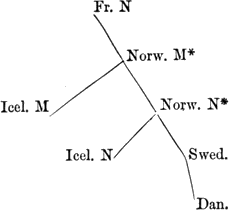
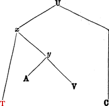

1866 (re-edited 1901; reprinted 1962)
Price 30s.
General Introduction and Table of Contents (separate file)
King Horn (separate file)
Introduction to Floris and Blauncheflur
Floris and Blauncheflur
Notes to Floris and Blauncheflur
The Assumption of Our Lady (separate file)
Glossary (separate file)
1866 (re-edited 1901; reprinted 1962)
Price 30s.
§ 1. Introductory, p. xxx.
§ 2. History, p. xxx.
§ 3. English Version, p. xxxvii.
§ 4. Dialect, p. xxxix.
§ 5. Date of Composition, p. xli.
§ 6. Versification, p. xlii.
§ 7. Manuscripts, p. xlii.
If in King Horn we have a story Germanic in descent, and betraying everywhere traces of its Germanic origin, in Floris and Blauncheflur we have a romance of extraneous, probably ultimately of oriental origin, and the contrast is in many ways interesting and instructive. The love element, which in King Horn plays so large a part, in Fl. and Bl. is the all in all. This story of all-absorbing passion, which in spite of seemingly insurmountable obstacles and desperate perils, in the end reunites the devoted lovers, was one of the most popular during the Middle Ages, and one of the earliest to be imported from the East. The history of the tale vies in interest with the story itself. The story in a perplexing variety of versions spread over all the countries of Christendom, as we shall see later. It seems to be the basis of the charming chantefable, Aucassin and Nicolete, which Andrew Lang and Walter Pater have made so well known to the modern world. The English version, which unfortunately is incomplete at the beginning in each one of the four manuscripts in which it has been written down, was probably derived directly from one of the French versions, as we shall see.
The story of Floris and Blauncheflur is probably an oriental product, and shows many traces of Byzantine influence. It was one of the first of these oriental tales to be retailed in the Occident and had a wide circulation in all the countries of western Christendom, from Spain and Italy to the Scandinavian North. Its route from East to West it is not easy to trace with certainty, though the Crusades were quite probably the means of its importation. Further than this it is not easy to determine. The Provençals, whose active part in the Crusades is well known, may have been the agents, or, as is so often the case with the oriental tales, it may have been imported in a Latin dress.
xxxiThe history of the story in the West is complicated on account of the puzzling multiplicity of versions among which it is sometimes exceedingly difficult to determine the interrelations. The clue to the difficulty was early hinted at by Sommer (E. Sommer, Einl. zu R. Fleckes Flore und Blaunscheflur, Quedlingburg und Leipzig, 1846), and more recently the matter has been very thoroughly explained by Herzog (H. Herzog, Die beiden Sagenkreise von Flore und Blanscheflur, Wien, 1884) in his investigation of the subject. Herzog points out that there are to be distinguished in the Occident, two distinct general versions of the story. In the first of these, A, seems to be preserved the story in its original and genuine form. The second of these versions, B, seems to be a remodelling of the original version in the attempt to adapt to common folk a story in its existing form intended for higher circles of society.I.13 For this purpose slight allusions in A, are expanded in B into striking incidents. To bring out into strong light the injustice of Floris’s father and the final triumph of true love, supernatural and horrible elements and episodes are introduced. Since these new elements are of a kind common in other Byzantine tales, it is concluded that the remodelling of the story had already taken place before the importation from the East.
The second of these imported versions, B, first circulated in Italy, in Spain and in Greece. It also seems, somewhat indirectly as we shall see, to have served as a basis for the second French version and for one group of the German Volksbücher. The versions of B, if we leave the second French version out of consideration, all represent the parents of Blauncheflur as Italian, and in part have the same names for the characters. This circumstance, with other corroborating facts, seems to indicate that version B first took root in Italy, and from there spread into Spain and into Greece, possibly its original home.
Version A, on the other hand, seems first to have been imported into France, the great jobbing nation of the Middle Ages in all sorts of romantic stuffs and materials. From France it was early retailed to Germany, to England, to Scandinavia, and, possibly, to Italy. From Germany in turn it was re-exported into Bohemia. Version A was without doubt the first to become known, since we find it not only in the Old French, but in the Germanic versions springing from a French source, in an unperverted state. All the different versions of B, on the other hand, have been very noticeably influenced by A, indicating that the arrival of B was after A had become established and well known.
xxxiiWe encounter the story of Floris and Blauncheflur earliest in France, and the French seem to have been the first to make the story a subject for poetic treatment. The story appears in French, besides in two songs celebrating episodes in this tale of true love, in two distinct versions. The earliest of these versions, which we may designate as I., had its origin, it seems, about 1160.I.14 (Cf. F. Steinmeyer, H Z, xxi, 319.) Certain it is that a French version of A must have existed about 1170, to serve as a basis for one of the German (the low Rhenish) versions, Floyris und Blanscheflur. This French version, I, seems to represent fairly well the A general form of the story. As so often in the case of other romances, the jongleurs tried to bring this foreign importation into the cycle of French story by connecting in bonds of kinship, its characters with the names celebrated in French epic. Blauncheflur is represented as being the mother of Bertha of the big foot, the wife of Pepin, father of Charlemagne.I.15
Du Méril (E. du Méril, Floire et Blancheflor, Paris, 1876) in discussing the interrelations of the two French versions, characterizes one as a version for a select public, “version aristocratique,” and the second as a version for the entertainment of the masses, “version populaire.” The French II. version, the “version populaire,” is, according to Herzog, p. 4, the result of a sort of fusion of the A and B general forms of the story,I.16 with which have been woven in various episodes which elsewhere are not known to either general form of the story, A or B. Herzog further on continues (p. 11), “Ich halte dafür dass dieselbe (the OF. II. version) ebenfalls aus Italien nach Frankreich hinübergewandert ist, wo ihr Bearbeiter den Inhalt des zweiten Kreises mit dem ihm geläufigen ersten Kreise so verschmolzen hat, dass dieser einige nur dem zweiten Sagenkreise angehörige Züge ganz verdrängte.”
The general style and manner of handling the story is quite different in the two French versions. The “version aristocratique” preserves the traits of an oriental romance, and Floire is represented as a love-sick xxxiii youth. “Sans li ne puis jou pas aprendre” he replies when his father proposes to educate him alone. There is hardly a more sentimental passage in literature than the one in I. (212-266) describing the school-days of the children:
Ensamble vont, ensamble vienent
Et la joie d’amor maintient
Nus d’aus deus chose ne savoit
Que lués a l’autre ne disoit.
. . . . . . . . . .
On ooient parler d’amors.
Ensamble lisent et aprendent;
A la joie d’amor entendent:
Un vergier a li peres Floire
. . . . . . . . . .
D’amors i chantent li oisel.
Quant il mangoient et bevoient
Li oisel seure aus se séoient;
Des oiseles oent les chans:
Cou est la vie as deus enfans.
. . . . . . . . . .
Et quant a l’escole venoient
Lor tables d’yvoire prenoient,
Adont lor veissiez escrire
Letres et vers d’amors en cire.
Letres et salus font d’amors
Du chant des oisiaus et des flors.
The writer of I. is evidently a genuine poet, though perhaps somewhat of the ‘spring poet’ order. He exalts the sentiment of love, as we have seen, and feelingly describes the elaborately constructed tomb (vv. 530-652), the finely wrought cup (vv. 431-498), and the birds and flowers and fountains and trees of the gardens of the king and of the ‘Admiral.’ He dwells in sensuous fondness in his enumeration equally of the fine stuffs and precious stones; the mantiaus, vairs osterins and bliaus indes porprins (429-30), or the saffirs and calcidoines and boines jagonses and sardoines, etc. (1755-77), and of flowers and trees; the “poivre, canele et garingal,” or the “encens, girofle et citoval,” or the beuns, the plantoine, the alïer, the boins figiers, the peschiers, the periers and the noiers (1761-8).
The “version populaire,” on the other hand, seems to be adapted somewhat to the ideal of the native French epic, and Floire is represented as a model of courage and knightly virtue, in a class with the douze pers and the other heroes of the Charlemagne cycle of stories. The writer interpolates scenes in which Floire may display his fighting qualities. In the early part of the story, he returns from school just in time to rescue Blauncheflur, who is about to be committed to the flames. He accomplishes her rescue by acting as her champion and fighting the seneschal, who has accused her of attempting to poison the king. The combat is a stirring one quite in the manner of the Chansons de geste (vv. 920-1160). On the journey to Babylon, Floire has heroic adventures in a battle with Diogenes, son of Samones, king of the city of Fusis (1854-1984). Later, when the trial of Fl. and Bl. is interrupted by the arrival of an invader, Jonas de Handreas, Fl. offers to vanquish the invaders if his life be spared. At first he is unsuccessful in his attempt, but after being taken prisoner by the invaders, he is aroused by the reproachful words of Bl. and breaking loose, slays Jonas, thus delivering the city and winning Bl. (3120-3410). xxxiv The writer of II. emphasizes the battle scenes at the expense of the descriptive passages, devoting to the description of the tomb only 32 verses, and to that of the wonderful cup, only 14. He seems also to be of a practical turn of mind, and instead of fondly enumerating the gems received for Bl., describes rather the circumstances of the sale. Babyloine is a rich city with no poor, and has a rent of three thousand ounces of gold each day (vv. 2319, 2342). From all these instances one can see that the sweet and sentimental tale of the I. version is quite modified in II. If we agree with Herzog that this version was the result of the blending of the B version imported from Italy, with the A version, which was already well known in France, we must conclude also that this “version populaire” is influenced by the ideals of contemporary French poetry of native origin, by the manners and conventions of the chansons de geste, and the heroic romances springing from or influenced by them.
Among the troubadours of Provence the story of Fl. and Bl. was early known and popular, as one must judge from the very frequent allusions. There is, however, no proof of the existence of a Provençal romance.
In Germany are to be encountered many versions of the popular story. The earliest one seems to have been the Low Rhenish poem Floyris and Blaunchiflur, of about 3700 lines, translated by an unknown poet about 1170 (Steinmeyer, H. Z. xxi, 307-331). To the middle of the 13th century belongs the MHG. poem in 8006 lines by Konrad Fleck, composed, quite independently of the Low Rhenish version above mentioned, after an OF. original. (Ed. by E. Sommer, Quedlingburg u. Leipzig, 1846.) Somewhat younger is the Mid. Low Germ. poem, Floris ende Blancefloer of 3983 lines (Ed. by H. von Fallensleben, Leipzig, 1836, and by H. E. Moltzer, Groningen, 1879, in the Bibl. van Middelnederlands Letterkunde). The poet, Dideric van Assenede, says, himself, that he derived his material from the “Walsche.”I.17 As a matter of fact his original seems to have been French. To the third half of the 14th century belongs the Low Germ. poem Flosse un Blankflosse of 1534 lines (Ed. by Stephan Waetzoldt, Bremen, 1880), which also seems to go back to a French original.I.18
xxxvIf we look more closely into the question of the French original of the German poems, we must assume a version, χ, earlier than the version preserved in the three existing MSS. of French I. version. These three MSS. may be classed into a group, z, whose chief characteristic is the attempted suicide of Floris in the Lion pit. This scene appears in two of the existing MSS., and the writer of the third MS. seems to have had the scene in his original but to have left it out. (Cf. H. Sundmacher, Die altfrz. u. mittelhd. Bearbeitung der Sage von Fl. und Bl., diss. Göttingen, 1872.) Among the German versions it appears only in the LG. Flosse un Blankflosse. The other German versions must rest on an OF. version, χ, which at the hands of FleckI.19 underwent an artistic reconstruction, but at the hands of Dideric was translated simply, without the addition of any new ideas by the adapter.
In addition to these early German versions must be mentioned two groups of Volksbücher: (1) from Boccaccio’s Filocolo, (2) from Fleck’s poem, also a Bohemian adaptation and a German Jewish adaptation, (Cf. Hausknecht, ed. of Fl. u. Bl., pp. 13-20, Berlin, 1885.)
Our story had a wide circulation also in the North, as one must infer from the number of Scandinavian versions preserved: (1) the old Norweg. fragment of a saga (ed. by G. Storm, Nordisk Tidskrift for Filologi og Pædagogik, Copenhagen, 1874, pp. 24-28), (2) the complete Icelandic saga of Flóres ok Blankiflúr, (3) the fragments of a second Icelandic Saga (ed. by Brynjolf Snorrason, Annaler for nordisk old kyndighed og historie, 1850); (4) the Old Swed. poem (ed. by E. Klemming, Samlingar utgifna af svenska formskrift-sällskapet, I., Stockholm, 1844); and (5) the Danish translations from the Swedish (ed. by C. J. Brandt, Romantisk Digtning fra Middelalderen, I. and II. København, 1869-77). The distinguishing characteristic of the Northern versions is the conclusion. According to the Norse version, Floris, to refute the charge that he has gained admittance to Bl.’s tower by the use of magic tricks, offers to fight in single combat the bravest of the Admiral’s knights. In the ensuing combat he overcomes the Admiral’s champion, and receives as his guerdon, Blauncheflur. If we accept Herzog’s conclusions (pp. 15, 35, 45-6, 66) we must assume as an original for the Scandinavian versions, a French original, N, with the ending peculiar to the Northern versions. The development from this original is shown by the following plan (also borrowed from Herzog, p. 92).
xxxvi
In Italy also the story of Fl. and Bl. enjoyed great popularity. The two chief versions were: (1) the Cantare, written by a popular poet in ottave rime; and (2) Boccaccio’s youthful production, his first prose romance, Filocolo. That the I. version of the story, the one most popular in France, was also current in Italy, we see in these two versions, both of which show, in addition to the special traits of II., many traits peculiar to version I. To determine exactly the interrelations of these two versions is no easy matter. From allusions in the Filocolo we know that the Cantare was the older. Internal evidence, however, forbids the supposition that the Filocolo has sprung from the Cantare. Rather the two versions go back to a common source. This Italian, or Franco-Italian, version, which probably had no differences of real moment from the Cantare in its present form, must in many points have been more ample and complete, and in individual instances nearer the French tradition, than the Cantare is.
In connection with the Italian group must also be mentioned the Greek poem of Florios and Platziaflore, composed in the 14th century and founded upon the Cantare.
In Spain we find allusion to our story already in the 13th century, when the Gran conquista de Vltramar refers to Fl. and Bl. as the most devoted pair of lovers that one had ever heard of. But there is no proof of the existence of a Spanish version of the story as early as this. In the year 1512, appeared at Alcala the prose romance, Flores y Blancaflor, which is current to the present day. The close relationship of this to the Italian versions is very evident. Its source, however, seems hardly to be directly the Cantare. The beginning of the Spanish romance, which is xxxvii entirely peculiar to this version, points rather to a version in the North of Italy, which the Spanish adapter has quite probably translated into Spanish without important alteration.
The story of Fl. and Bl. found its way into England in the 13th century, that is to say, when it had been for a hundred years familiar to French hearers and after it had already spread into many lands outside of France. As has been said, the English version goes back to a French original. This original was certainly of the I. form. Of the features peculiar to the French II. version, the English version does not show one, while it agrees with the French I. version to the extent of exact translation of many phrases and verses and even of reproduction of French rime-words. At the same time the French original that lay before the English adapter can not have been the text exactly as it is preserved in any one of the three extant French MSS., but rather an older, or purer text which we have designated by χ, a distinguishing feature of which is the absence of the attempted suicide of Floris in the lion pit. The text that must be assumed as the original of the English poem must have been very similar to the original from which Fleck and Dideric derived their German versions, but not exactly identical as is evidenced by frequent slight divergences.
The English poet has not expanded and amplified by the addition of further details or by the introduction of personal reflections, as the German Fleck has done. He has presented the essential features of the love story as it impressed him, in a condensed form to be sure, at the same time without bareness or baldness. Unlike the adapter of the Low Rhenish condensed version, he has preserved the original order of incidents, and has usually preserved faithfully the smallest details that have any essential bearing on the plot.
Some idea of the English writer’s fidelity to the details and even to the phraseology of his French original, and of his method of translating, may be gained from the following parallel passages:
The English text, including line numbers, is from Hausknecht’s edition.
Que bien sorent parler latin
Et bien escrivre en parchemin
Inouȝ þey couþ of latyne
And wel wryte on parchemyn
Faites la moi tost demander
Ja li ferai le chief couper.
Let do bryng forþ þat mayde,
Fro þe body þe heved schal goo.
Et il l’a tant bien acatée
Qu’a fin or l’a sept fois pesée.
Þe amyral hur bouȝt anoon
And gafe for hur, as she stood upryȝt,
Seven sythes of gold her wyȝt.
Ci gist la bele Blanceflor
A cui Floires ot grant amor.
Here liþ swete Blauncheflur
Þat Floris loved par amur.
Un grafe a trait de son rapier
. . . . . . . . .
En son cuer bouter le voloit,
Quant sa mere cou apercoit.
His knif he droȝ ut of his scheþe
And to his herte hit hadde ismite,
Nadde his moder hit underȝite.
The grafe is elaborately described in vv. 788-98:
Li roi li done un palefroi,
Qui d’une part estoit tous blans,
De l’autre rouges comme sans.
Þe king let sadel a palfray
Þe oon half white, so mylke
And þat oþer reed, so sylk.
Fius, fait ele, gardez le bien;
Tant com l’aurez, mar cremez rien;
Car vous ja rien ne requer(r)iez
Que tost ou tard vous ne l’aiez
Mi sone, he rede, have þis ring;
While he is þin, ne dute noþing.
. . . . . . . . .
And be hit erli and be hit late
To þi wil þu schalt habbe whate.
La le troevent ou siet, sous l’arbre,
Sor un perron qui fu de marbre.
Þe briggere he fond ate frome,
Sittinde on a marble ston.
Le millor conseil que jou sai
Þe beste red þat ihc þe can
Si maudient qui s i foula
Hi beden God ȝive him wel fin
Þat so manie flures dide þerin
Des flors sali un paveillon
Des eles feri mon menton;
Del paveillon tel paor oi,
Que m’escriai plus tost que poi
Þer fliste ut a buterfliȝe,
Are ihc wiste, on mine iȝe.
So sore ihc uas offerd of þan,
Þat ihc loude crie bigan
Bele compaigne, Blanceflor,
Volez vous veoir bele flor?
And sede, “Swete Blauncheflur,
Wiltu se a wel fair flur?”
Damoisele qui a amor
Et joie en soi, doit avoir flor.
Ho þat loveþ par amur,
An haþ þerof joie, mai love flur.
In spite of this number of tolerably exact correspondences, in word and phrase, with the French original, the English poem is a condensed adaptation rather than a slavish translation. As in the French II. version, the tender and sentimental element is much condensed; but the English writer, unlike the writer of French II., does not introduce the heroic and warlike element in the form of duels and battles. He does not amplify by adding new details, as Fleck did, nor does he confuse the order of incidents as does the adapter of the Low Rhenish version. He makes rather a faithful condensation quite after the manner of English adapters from the French, which is no doubt to be explained as due not so much to difference between the writers, English and French, as to a difference xxxix between the hearing publics, French and English, for whom the production was intended.I.20
No doubt with his English public in mind, the English poet, in adapting the story from the French, has modified to some extent the tenderness and sentimentality, even at times the poetic descriptions, of his French original (compare vv. 1117-1194 of the French with the corresponding English vv. 457-72), and has omitted the enumeration of gems and of precious stuffs suggestive of an elegance perhaps unintelligible to an English speaking and hearing public at this time. The wonderful cup, to the description of which 67 verses (431-498) are devoted in the French romance, in the English poem is dismissed with 17 verses (163-184). The garden so elaborately described in the French, vv. 1724-1835, in the English poem occupies only vv. 685-732. The description of the knife (grafe), which serves no other purpose than that of external adornment in the French version (vv. 788-799), is entirely neglected in the English translation. The translator’s method is well illustrated in the case of the description of Floris’s equipage preliminary to setting out on his journey. The description of the saddle and harness occupies 37 verses (964-1000) of the French poem, and is dismissed by the English translator with 5 (vv. 382-389), I ne can telle ȝou noȝt Hu richeliche þe sadel was wroȝt, and three verses following.
To sum up, the English version is a free, somewhat condensed, translation from the French I. version. The translator has introduced almost no new traits, and the extent of the condensation may be judged by considering the 1296 verses of the English as compared with the 2974 verses in the French I. version. The manner of the condensation has been indicated. But with all the condensation, especially in the descriptive passages, it is important to note that in the essential features of the story, the translator follows his original faithfully, so that the main outline of the story is preserved as accurately in English as in French.
In Fl. and Bl. as in King Horn it is difficult to distinguish certain criteria of dialect on account of the variety of orthography in the different manuscripts. Here again the only safe guide is the rimes, and the evidence of these is not entirely uniform for the different texts. There is a great difference in age between MS. C, the oldest, and MS. T, probably the youngest of the four MSS. Further there is a difference in the xl dialects represented by the different scribes. The scribes of MSS. C and Cott. were evidently southerners, and seem, here and there, to have twisted the verses around to make them fit the Southern dialect. On the other hand the later scribe of MS. T seems to have changed verses to make them fit his later dialect. Either the phrases are less stereotyped than in Horn or the poem was not so well known; in any event the scribes of the individual texts seem to have allowed themselves greater independence. The result is that the rime test here is not a sure one. The evidence of rimes in MS. C is not necessarily valid for MS. T, and vice versā; and which rimes indicate the pronunciation of the original composer, it is often difficult to say. If we bear these points in mind we may perhaps draw some satisfactory conclusions from the following criteria:
1. OE. ȳ̆ seems to have been pronounced ī̆. e.g.; cusseþ : blisse, custe : wiste 549-52 C, ywys : kysse 1067 T, winne : kinne 806 C, blisse : kisse 786 C, fylle : wylle 738 T, lyke : lyte 782 T. Only apparent exceptions are meene : kyne 274 T (these words do not rime together in the original), and bygge : segge 989 T. Ostesse : kysse belongs only to MSS. T and Auch.
2. If we apply Prof. Hempl’s -wǭ-, -wọ̄- test we find some evidence of a Midland dialect, e.g.; too : soo 94 T, vndoo : soo 74 T, also : doo 224 T, 764 C, soo : doo 64 T, 336 T, 624 T, so : fordo 307-8 C. This test applied to Fl. and Bl. is not certain in itself, but supports the other evidence. That the test is uncertain we see from the occurrence of apparently inaccurate rimes such as hoom : doom 1079 T, 802 C, and from a few rimes which oppose the evidence of those above cited, e.g., þoo : twoo 30 T, two : mo 218 T (and Cott.), so : go 438 C, 824 C, bo : atuo 548 C, 614 C, þo : so 666 C, also : bo 780 C, whoom : froom 70 T. It would seem then that the change had affected the ā in OE. swā but not in twā and hwā. It must be noted that all the quoted so rimes with ọ̄ occur in MS. C, which, as we shall see later, has a strong Southern colouring.
3. The product of OE. a before l + cons. seems to be a, or with lengthening before -ed, ō. e.g.; wal : cristal 273-4 C (also 609-10 T), wolde : golde 208 T, tolde : holde, sholde : holde 435-6 T (also 77-80 C), wolde : beholde 751 T (also 449-50 C), 769-70 T (also 471-2 C). Exceptions occur in the Southern MSS. e.g.; elde : helde 102 Cott., halle : welle 230 C, welle : alle 224 C, 280 C, but are not paralleled in MS. T.I.21
xli4. The inflectional endings of the pres. indic. seem to be -e, -est, -eþ for the singular. There are rimes to prove the 3rd sing. in -eþ; seith : withe 106 T, he sit : nabit 40 C, geþ : deþ 200 C (also T and Cott.), 422 C (also T). The plural ending is less evident. The Cambr. MS. has rcularly -eþ. e.g.; habbeþ 20, serueþ 1256, beoþ 294, 295, weneþ 314, leteȝ 448, chaungeþ 510, goþ, seoþ, spekeþ 708 C, crieþ 526; the T. MS. -en, e.g.; seruen 590 T, cryen 815 T, ben 909 T, etc. That the -eþ ending did not belong to the original we may probably infer from the fact that while the -eþ of the 3rd sing. counts metrically, the -eþ of the plural usually does not. Cf. 20 C, 256 C, 448 C, 526 C, 708 C, etc. But cf. springeþ 296 C, bisecheþ 765 C, falleþ 786 C. These endings, then, point to an East Midland dialect. Cf. also the rimes; wepinge : bringe Cott. p. 105, cusseþ : blisse 549-50 C.
5. OE. æ̆ (e) and shortened OE. ǣ, umlaut of WG. ai, or WG. ā.
The OE. short æ appears regularly as a. trespas : was 1043 T, orgas : was 102 T, Cesar : bar 182 T, are probably to be explained as due to one of the Southern scribes of MSS. C and Cott. e.g. vnderȝet : set 166 C (but cf. vnderȝat : sat 98 C). The shortening of OE. ǣ (umlaut of WG. ai) also appears regularly as a. e.g.; glade : ladde 480 T, ilast : cast 338 C, glad : ilad 114 C. But cf. lasse : wytnesse 952 T. In the rime, rest : mest 120 C, 384 C, it is impossible to determine whether the ǣ is shortened to ĕ, as in parts of the South, or the ĕ is lengthened to ē. The shortening of OE. ǣ (WG. ā) does not occur in rime often enough to permit any safe conclusion. The rimes radde : madde 826 T and radde : hadde 1025 T, seem to show that the product of shortening was a. That the representative of WG. ā was the Saxon ǣ rather than the Anglian, and Kentish ē, seems probable from the rimes rede : seide 21-2 T, 51-2 T, 215-16 T, 263-4 T (66 Cott.); reede : deede 45-6 T, 53-4 T.
From these criteria, which seem to be the best available, we may infer that Fl. and Bl. belongs further north than King Horn. Further, the inflections seem to point to the Eastern rather than to the Western Midland, so that we may feel fairly safe in attributing Fl. and Bl. to the East Midland.
We shall probably be safe in setting the date of composition in the second half of the 13th century. Lengthening in open syllables seems to have taken place, e.g.; coome : soone 100 T, grome : coome 112 T, xlii come : hoome 500 T, wite : vnderȝete 556 C (also Cott.), wite : wite 756 C, þerone : stone, 112 T, vppone : stone 172 T, 212 T, þare : ware 1036 T, etc. From this we must conclude that the date of composition is not earlier than 1250. On the other hand the earliest MS. (C) dates back to the second half of the 13th century. Indeed in this MS. there are still traces of the old distinction of grammatical gender, and OE. ū is still always represented by u; while the second oldest MS. (Cott.) has the newer writing ou. (Cf. Hausknecht, ed. of Fl. and Bl. p. 130, Berlin, 1885.)
The poem is composed in short rimed couplets. The normal verse has four stresses. In no one of the MSS., however, are all the verses perfectly regular, due largely, no doubt, in part to the variety of forms available to each composer and to the variety of spellings to choose from, also to the attempts of each scribe to make the verses of the original fit into his own dialect. The rimes may be masculine or feminine. At times they are mere assonances, e.g.; first : lyst 693-4, furste : luste 377-8 C, lyke : lyte 781-2 T, longe : sonde 795-6 C, coome : soone 100 T, etc. At times they are inaccurate, e.g.; grunde : honde 303-4 C, meene : kyne 273-4 T. Peculiar are the rimes; þerate : gate 153-4 C, etc., fyne : þeryne 369-70 T, 441-2 C, etc., þerone : stone 112 T, 212 T.
Floris and Blauncheflur appears in four MSS., in each of the four with a greater or smaller part of the beginning lost.
1. T., the Trentham MS., is in the library of the Duke of Sutherland at Trentham Hall in Staffordshire. The MS. is a relatively late one (about 1440), and is written in a very legible, informal running hand, with loops to the b’s, l’s, etc. It contains a series of metrical romances; besides Floris and Blauncheflur, also Kyng Rychard, Bevous of Hampton, The Batell of Troye, Amys and Amylion, and Sir Eglamoure. Our poem stands on folios 98-111. The headings to the pages are; on the even, left-hand pages, Florence, on the odd, right-hand pages, & Blanchefloure. The MS. contains 1083 lines of our poem. The beginning of the poem is lost in this MS., as in the three others, and the first preserved folio is an odd, right-hand page, with the heading, & Blanchefloure. The first verse in this MS. corresponds to verse 193 of the French.
The reading of the MS. is made difficult and uncertain by the end flourishes to certain letters, e.g.; gold), stoon), vppon), which it is hard to interpret. It has been collated with the three others by Hausknecht, in his admirable critical edition of the poem.
xl32. Cott., the Brit. Mus. MS. Cott. Vitell. D. III., which probably belongs to the second half of the 13th century, suffered badly from fire in 1731. Of the original 219 folios of this parchment MS., 26 remain, and these are in many parts exceedingly difficult to read, so that the readings here offered, which are based mainly on Lumby’s text, are offered with apologies, and may no doubt be bettered here and there by comparison with the other MSS. Our poem, which occupies folios 6a-8b of the existing MS., is preceded by Versus de historibus sacris veteris et novi Testamenti, veteri lingua Gallicana (O. French), and in the same handwriting with Fl. and Bl. The following folios (9-26) contain in Latin prose, Expositiones quaedam sive comentarii in Macrobii Saturnalia.
Of our poem only 451 lines are preserved in this MS., and of these only 180 are completely legible. The first verse corresponds to about v. 508, and the last to about v. 2514 of the French. The writing is in a fine, apparently French, book hand.
This MS. has been printed by Lumby in the original to the present edition for the E.E.T.S., and has been used by Hausknecht in collation.
3. A., the celebrated Auchinleck MS. of the Advocates’ Library in Edinburgh, is a veritable mine of romance. Perhaps the best description is still that given in Sir Walter Scott’s introduction to Sir Tristrem, where is to be found an enumeration of the 44 different articles, mostly romances, still contained (besides 13 lost). It is a large quarto on vellum, and according to Ellis, belongs to the very first of the 14th century. Of our poem, which occupies five double-columned folios (100-104), 861 verses are contained, of which the first corresponds to v. 1001 of the French.
Fl. and Bl. has twice been reprinted from the Auchinleck MS.: (1) C. H. Hartshorne, Ancient Metrical Tales, London, 1829, (2) David Laing, A Penni Worth of Witte, etc., Abbotsford Club, Edinburgh, 1857.
4. C., the Cambr. Univ. MS. Gg. 4. 27. 2, has already been described. (See page xxviii.) Of the fragment of a MS. that now exists, the final 824 verses of Fl. and Bl. occupy folios 1a-5b. The first verse preserved corresponds to verse 1001 of the French poem.
The interrelations of these four MSS. have been carefully studied by Hausknecht (as above, pp. 98-108), whose results may be summarized as follows: MSS. A., Cott., T form a group x. Now C., now group x has gaps, and neither is free from individual changes.
Within the group x, A and Cott. form a special sub-group, y going back to a common origin, but at the same time independent of each other.
xlivWe may borrow from Hausknecht the following diagram representing the interrelations.

T misprinted as I (both here and in Hausknecht).
As regards the relative value of the different MSS., it must be said that T is the least to be depended on for accuracy, but is valuable because it preserves more of the early part of the story than is preserved in any of the other MSS. As regards the relative value of C and x it is hard to decide. Still the instances in which C, in opposition to A, agrees with the French are more numerous than are the instances of the contrary case.
I.13 G. Paris distinguishes three general versions, two French versions and a third, “Roman” version, in which the parents of Blauncheflur are not French but Roman.
I.14 The evidence cited by G. Paris, consists of allusions to—(1) History of Troy, (2) Siege of Troy, (3) Aeneid, etc. The place of origin, according to G. Paris, was probably in the region about Beauvais, lying between Normandy, Picardy and the Île de France.
I.15 Perhaps this is a mere coincidence, since in a poem about Berthe, her father happens to be named ‘Florie,’ a Florie with a different history, roi de Hongrie. Later this relationship was commonly assumed. In the Gran Conquista de Vltramar, the story of Berthe is intercalated. She is daughter of Blancaflor and Flores.
I.16 G. Paris makes this II. version the sole representative of a third distinct form of the story, the 2o of his general classification, 1o, 2o, 3o.
I.17 That is to say, French or Italian.
I.18 This version was evidently not translated from a French MS. but written from memory. The details are not always exactly identical with those of the French, though often so, enough so to make the origin of the poem unmistakable though it is much condensed and the order of events somewhat transposed.
I.19 Fleck’s work is a paraphrase. The details are identical but are amplified to 8006 verses.
I.20 This same consideration, as we have seen, probably explains in part the difference between the English King Horn and the Norman French Horn et Rigmenil.
I.21 That the Cambr. scribe was from the South is very apparent from: (1) the pres. indic. plur. endings in eþ, e.g. comeþ 282, etc., (2) the above rimes of OE. call : ell, (3) axede 576, 602, etc., (4) rede : hadde 453-4, (5) hi for ‘they’ 284, etc., heo for ‘she’ 303, etc., (6) ifere 502 C, in fere 827, 280 T, (7) vaire 16, wuder 114, etc.
Trentham MS., fol. 98 a; vellum, c. 1440: beginning lost. Headlines ‘Florence and Blanchefloure.’
Ne thurst menFB1 neuer in londe
After feirer Children fonde.
Þe Cristen woman fedde hem þoo,
4 Ful wel she louyd hem boþ twoo.
So longe sche fedde hem in feere
þat þey were of elde of seuen ȝere.
Þe kyng behelde his sone dere,
8 And seyde to him on this manere,
Þat harme it were muche more
But his sone were sette to lore
On þe book+ letters to know,
12 As men done, both hye and lowe.
“Feire sone,” she seide, “þou shalt lerne,
Lo þat þou do ful ȝerne.”
Florys answerd with wepyng,
16 As he stood byfore þe kyng+;
Al wepyng+ seide he,
FB.1 first ‘mey,’ then alterd
Floris says that he cannot learn unless Blauncheflur is with him.
The two are put to school together, and make good progress.
To scole þey were put;
Boþ þey were good of+ wytte.
Wonder it was of+ hur lore,
28 And of+ her loue wel þe more.
Þe Children louyd to-geder soo,
Þey myȝt neuer parte a twoo.
When þey had .v. ȝere to scoole goone
32 So wel þey had lerned þoo,
Inowȝ þey couþ of latyne,
And wel wryte on parchemyne.
Þe kyng+ vnderstod þe grete Amoure
36 Bytwene his sone and Blanchefloure,
And þouȝt when þey were of Age
Þat her loue wolde noȝt swage;
Nor he myȝt noȝt her loue withdrawe
40 When Florys shuld+ wyfe after þe lawe.
[98 b]
Þe king+ to þe Queene seide þoo,
And tolde hur of+ his woo,
Off+ his þouȝt and of his care,
44 How it wolde of+ Floreys fare.
The king begins to devise to separate the two, and proposes to put the maiden to death.
“Dame,” he seide, “y tel þe my reede,
I wyl þat Blaunchefloure be do to deede.
When þat maide is y-slawe,
48 And brouȝt of her lyf+ dawe,
As sone as Florys may it vnder ȝete,
Rathe he wylle hur forȝete.
Þan may he wyfe after reede.”
52 Þe Queene answerde þen and seide,
And þouȝt with hur reede
Saue þe mayde fro þe deede.
“Sir,” she seide, “we auȝt to fonde
56 Þat Florens lyf+ wit menske in londe,
And þat he lese not his honour
For þe mayden Blauncheflour.
Who so myȝt þat mayde clene,
60 Þat she were brouȝt to deþ bydene,
Hit were muche more honour
Þan slee þat mayde Blancheflour.”
Vnneþes þe king+ g[ra]unt þat it be soo.
64 “Dame, rede vs what is to doo.”
Floris is sent to Mountargis to school.
The queen suggests that Floris be sent away.
“Sir, we shul oure soone Florys
Sende into þe londe of Mountargis.
Blythe wyl my suster be
68 Þat is lady of+ þat Contree.
And when she woot for whoom)
Þat we have sent him vs froom),
She wyl doo al hur myȝt,
72 Boþ by day and by nyȝt,
To make hur loue so vndoo
As it had neuer ben soo.
And, sir,” she seide, “y rede eke
76 Þat þe maydens moder make hur seek+.
Þat may be þat other resoun)
For þat ylk+ enchesoun,
Þat she may not fro hur moder goo.”
80 Now ben þese Children swyþ woo,
[99 a]
Now þey may not goo in fere
Drewryer þinges neuer noone were.
Florys wept byfore þe kyng+,
84 And seide, “Sir, with-out lesyng+,
For my harme out ȝe me sende,
Now she ne myȝt with me wende.
Now we ne mot to-geder goo,
88 Al my wele is turned to woo.”
Þe king+ seide to his soone aplyȝt,
“Sone, withynne þis fourtenyȝt,
Be her moder quykke or deede,”
92 “Sekerly,” he him seide,
“Þat mayde shal come þe too.”
Floris is sent to his aunt at Mountargis, with the promise that Blauncheflur shall follow within fourteen days.
“Ȝe, sir,” he seid, “y pray ȝow it be soo.
Ȝif þat ȝe me hur sende,
96 I rekke neuer wheder y wende.”
Þat þe Child+ graunted þe kyng+ was fayne,
And him betauȝt his Chamburlayne.
With muche honoure þey þeder coome,
100 As fel to a ryche kynges soone.
Wel feire him receyuyd þe Duke Orgas,
Þat king+ of þat Castel was,
And his Aunt wiþ muche honour;
104 But euer he þouȝt on Blanchefloure.
Glad and blythe þey ben him withe;
But for no ioy þat he seith,
Ne myȝt him glade game ne gle,
108 For he myȝt not his lyf+ see.
His Aunt set him to lore
73Þere as other Children wore,
Boþ maydons and grome;
112 To lerne mony þeder coome.
Inowȝ he sykes, but noȝt he lernes;
For Blauncheflour euer he mornes.
Yf+ enyman to him speke
116 Loue is on his hert steke.
Loue is at his hert roote
Þat no þing+ is so soote:
Galyngale ne lycorys
[99 b]
120 Is not so soote as hur loue is,
Ne nothing+ ne none other.
So much he þenkeþ on Blancheflour,
Of+ oo day him þynkeþ þre,
124 For he ne may his loue see.
The King proposes to put Blauncheflur to death.
He grieves until the fourteen days are past.
Þus he abydeth with muche woo
Tyl þe fourtenyȝt were goo.
When he saw she was nouȝt ycoome,
128 So muche sorow he haþ noome,
Þat he loueth mete ne drynke,
Ne may noone in his body synke.
The chamberlain reports Floris’s sorrow to the king.
Þe Chamberleyne sent þe king+ to wete,
132 His sones state al y-wrete.
The king is very angry, and again proposes to put Blauncheflur to death.
Þe king+ ful sone þe waxe to-brake,
For to wete what it spake:
He begynneth to chaunge his moode,
136 And wel sone he vnderstode,
And with wreth he cleped þe Queene,
And tolde hur alle his teene,
And with wraþ spake and sayde,
140 “Let do bryng+ forþ þat mayde!
Fro þe body þe heued shal goo.”
Þenne was þe Quene ful woo.
Þan spake þe Quene, þat good lady,
The queen proposes, instead, to sell the maiden.
144 “For goddes love, sir, mercy.
At þe next hauen þat here is,
Þer ben chapmen ryche y-wys,
Marchaundes of+ babyloyne ful ryche,
148 Þat wol hur bye blethelyche.
Than may ȝe for þat louely foode
Haue muche Catełł and goode.
And soo she may fro vs be brouȝt,
152 Soo þat we slee hur nouȝt.”
Vnneþes þe king+ graunted þis;
But forsoþ so it is,
Þe king+ let sende after þe burgeise,
156 Þat was hende and Curtayse,
And welle selle and bygge couth,
And moony langages had in his mouth.
This is done, and for the maiden they receive among other things a magnificent cup with a romantic history.
Wel sone þat mayde was him betauȝt;
160 An to þe hauene was she brouȝt.
[100 a]
Þer haue þey for þat maide ȝolde
xx. Mark+ of reed golde,
And a Coupe good and ryche,
164 In al þe world+ was none it lyche.
Þer was neuer noone so wel graue;
He þat it made was no knave.
Þer was purtrayd on, y weene,
168 How Paryse ledde awey þe Queene;
And on þe Couercle a-boue
Purtrayde was þer both her love;
And in þe Pomel þerone
172 Stood a Charbuncle stoone.
In þe world+ was not so depe soler,
Þat it nold+ lyȝt þe Botelere,
To fylle boþ ale and wyne,
176 Of syluer and golde boþ good and fyne.
Enneas þe king+, þat nobel man,
74At Troye in batayle he it wan,
And brouȝt it in-to Lumbardy,
180 And gaf+ it his lemman, his Amy.
Þe Coupe was stoole fro king+ Cesar;
A þeef+ out of his tresour hous it bar.
And sethe þat ilke same þeef+
184 For Blaunchefloure he it ȝeef+.
For he wyst to wynne suche þree,
Myȝt he hur bryng+ to his contree.
Now þese Marchaundes saylen ouer þe see,
188 With þis mayde, to her contree.
So longe þey han vndernome,
Blauncheflur is sold and carried to Babylon.
Blauncheflur is taken to Babylon and sold to the Admiral.
Þat to Babyloyne þey ben coome.
To þe Amyral of+ Babyloyne
192 Þey solde þat mayde swythe soone;
Rath and soone þey were at oone.
Þe Amyral hur bouȝt Anoone,
And gafe for hur, as she stood vpryȝt,
MS. Cott. Vitell. D. III., 6 a, col. 1.
The 3 leaves of this MS. are burnt and shrunk, and are hardly legible.
Now þese merchaundes þat may belete,
[100 b]
And ben glad of+ hur byȝete.
n Ow let we of Blauncheflour be,
204 And speke of Florys in his contree.
Now is þe Bu[r]gays to þe king+ coome
With þe golde and his garysone,
And haþ take þe king+ to wolde,
208 Þe seluer and þe Coupe of golde.
. . marchans þis maide forlete,
. . . bliþe mid here by-ȝete.
8 . . . . we blancheflur be.
. . floires in his cuntre.
. burgeys to þe king icome.
. . . gold and þisse garisome.
12 . . . þan king i ȝolde.
. . þo cupe of golde.
The king and queen cause to be made a supposititious tomb for Blauncheflur.
They lete make in a Chirche
As swithe feire graue wyrche.
And lete ley þer-vppone
212 A new feire peynted stone,
With letters al aboute wryte
75With ful muche worshippe.
Who-so couth þe letters rede,
216 Þus þey spoken, and þus þey seide:
“Here lyth swete Blaunchefloure
Þat Florys louyd Paramoure.”
Now Florys haþ vndernome,
. . . let at one chiriche.
. . . . les wereche,
16 . . . [þ]at anouen . .
. . pointe stonde
. . . . bi write.
. . . . . hele worþsipe
20 . . . þe letters rede.
. . . . . . . . .
. . . . . . . . .
. . . . . . . . .
24 . . [h]aueþ vnder-nome
Floris returns and inquires for Blauncheflur. ‘She is dead.’
Floris returns, and asks his father and mother for Blauncheflur in vain.
220 And to his Fader he is coome.
In his Fader halle he is lyȝt,
His Fader him grette anoone ryȝt,
And his moder, þe Queene, also,
224 But vnneþes myȝt he þat doo,
Þat he ne asked where his Lemman bee;
Nonskyns answere chargeþ hee.
So longe he is forth noome,
228 In to Chamber he is coome.
. . faderlonde he is icome
. . . halle he is alyȝt
. . . . he grette anonryȝt
28 . . þe quene he grette also
. . . haueþ his gretinge ido,
. . . askeþ war þat maide beo
. . . were nou targeþ heo.
32 . . . res hit haueþ vnder nome
. . boure & a is icome
He then asks the girl’s mother.
Þe maydenys moder he asked ryȝt,
“Where is Blauncheflour, my swete wyȝt?”
“Sir,” she seide, “forsothe ywys,
232 I ne woot where she is.”
She beþouȝt hur on þat lesyng+
Þat was ordeyned byfoore þe king+.
“Þou gabbest me,” he seyde þoo,
236 “Þy gabbyng+ doþ me muche woo.
Tel me where my leman be.”
Al wepyng+ seide þenne shee,
. . . to hire anonriȝt
. [bl]ancheflur mi suete wiȝt
36 . . . . . . ful iwis
. . . . . war heo is
[leaf 6, col. 2]
Þine gabbinge deþ me wo;
Tel me war my lemmon beo.
40 Al wepinge onsuerede heo,
The mother at length tells Floris that Blauncheflur is dead.
“Sir,” shee seide, “deede.” “deed!” seide he.
240 “Sir,” sche seide, “for sothe, ȝee.”
“Allas, when died þat swete wyȝt?”
[101 a]
“Sir, withynne þis Fourtenyȝt
Þe erth was leide hur aboute,
244 And deed she was for thy loue.”
“Sire,” heo seyde, “ded.” “ded!” quad he.
“Sire,” heo seyde, “for soþe ȝe,
Alas, wenne deide my suete wyȝt?”
44 “Sire,” heo seyde, “wiþ inne þis seueniȝt
Þat vrþe hire was leyd aboue,
And ded heo is for þine loue.
Floris swoons.
Flores, þat was so feire and gent,
Sownyd þere verament.
Þe cristen woman began to crye
76248 To ihesu crist and seynt Marye.
Þe king+ and þe queene herde þat crye;
In to þe Chamber þey ronne on hye.
And þe Queene herde her byforne
252 On sowne þe Childe þat she had borne.
Floyres þat was so fayr and gent,
48 He fel iswoue vp on þe pauement.
And þe cristene wimmon gon to crie
To crist and to seyntemarie.
Þe king & þe quene iherdde þat cri;
52 In to þe bure þo vrne hy.
And þe quene ate frome
By wepeþ hire dere sone.
Þe kinges hert was al in care,
Þat sawe his sone for loue so fare.
When he a-wooke and speke moȝt,
256 Sore he wept and sore he syȝt,
And seide to his moder ywys,
“Lede me þere þat mayde is.”
And þe kinges herte is ful of care
56 Þat he sikþ is sone vor loue so fare.
Anon he of swoninge awok and speke miste.
Sore he wep and sore he syȝte,
And on his moder he by siþt.
60 “Dame,” he sayde, “led me þar þat mayde lyþ.”
His mother comes to him, and conducts him to the supposititious tomb.
Þeder þey him brouȝt on hyȝe;
260 For care and sorow he wolde dyȝe.
As sone as he to þe graue com,
Sone þere behelde he þen,
Þider heo hine broute wel suþe,
Vor care a[n]d sorwe of hire deþe.
Anon þat he to þe burles com,
64 Wel ȝerne he bi-hul þer-on,
Floris reads the inscription on the monument, and swoons.
Floris reads the inscription, and then swoons three times.
And þe letters began to rede,
264 Þat þus speke and þus seide:
“Here lytħ swete Blauncheflour,
Þat Florys louyd paramoure.”
Þre sithes Florys sownydde nouth;
268 Ne speke he myȝt not with mouth.
As sone as he awoke and speke myȝt,
Sore he wept and sore he syȝt+.
And letteres bigon to rede.
Þus spek and þus sede
Þat þar lay suete blancheflur.
68 [Þat] floyres louede par amur.
Þ . . . . swouneþ nouþe
And asone ase he speke myȝte.
Sore he wep and sore he syȝte,
72 And gon blancheflur bi mene
Wit teres riue ase a scur of r[e]ne.
Floris weeps and sighs, and laments Blauncheflur’s death.
“Blauncheflour!” he seide, “Blauncheflour!”
272 So swete a þing was neuer in boure.
Of Blauncheflour is þat y meene,
For she was come of+ good kyne.
“Blancheflur,” he seide, “blancheflur,
So sute þing nas ner in bur,
[leaf 6, back]
76 Vor þou were ibore of gode cunne,
Vor in worle nes nere non
Þine imake of no wimmon.
Inouȝ þou cuþest of clergie
80 And of alle curteysie.
Lytel and muche loueden þe
276 For þy goodnesse and þy beaute.
77Ȝif deþ were dalt aryȝt,
We shuld be deed boþ on oo nyȝt.
On oo day borne we were;
280 We shul be ded boþ in feere.”
& muchel and litel hit louede þe
Vor þi fayr hede and þi bunte.
Ȝif þat deþ were ideld ariȝt,
84 We scholden habbe idiȝed boþe in ar niȝt.
Vor in one deye ibore we were;
Mid riȝte we scholden deie ifere.”
He apostrophizes death.
[101 b]
“Deeþ,” he seide, “ful of+ enuye,
And of alle trechorye,
Refte þou hast me my lemman.”
284 “For soth,” he seide, “þou art to blame.
She wolde haue leuyd, and þu noldest,
And fayne wolde y dye, and þu woldest.
“Deþ,” he seyde, “vol of enuie,
88 and vol of alle tricherie,
Mid traisun þou me hast mi lef binome.
To bi-traie þat folk hit is þi wone;
Heo wolde libbe and þu noldest.
92 Þou nelt me slen and ihc wolde;
[No gap in MS.]
Wiþ þere me wolde þat þou were.
Nul tu no wiȝt come þere,
and þer me wolde þat þou . . ne come,
96 Þer þou wolt come Ilome.
Þilke þat buste best to libbe,
Hem þou stikest under þe ribbe.
and ȝif þer is eni forliued wrecche,
100 Þat of is liue nouȝt ne recche,
Þat fawe wolde deie for sorewe & elde,
On hem neltou nouȝht bi helde.
No lengore ich nelle mi lef bileue,
104 I chulle be mid hyre ere eue.
After deeþ clepe nomore y nylle,
288 But slee my self+ now y wille.”
Nou after deþ clepie ich þe nulle,
Ac mi sulue aslen ich wille.”
He tries to stab himself, but is prevented by his mother.
He attempts to stab himself with a knife, but is prevented by his mother.
His knyf+ he braide out of his sheth;
Him self he wolde haue doo to deth.
And to hert he had it smetene
292 Ne had his moder it vnder ȝetene.
Þen þe Queene fel him vppone,
And þe knyf+ fro him noome.
She reft+ him of+ his lytel knyf+,
296 And sauyd þere þe Childes lyf+.
Forþ þe Queene ranne, al wepyng+,
Tyl she come to þe kyng+.
Ase a mon þat draȝh him sulue to þe deþe,
108 His knif he draȝh out of his scheþe,
and to his herte hit wolde habbe ismite,
Nadde his moder hit vnder gete.
Ac þe quene his moder . . fel vpon,
112 & þis knif heo him binom.
Heo bi nom him his atel knif.
[leaf 6, back, col. 2]
Þat heo com bi . . . . . . .
The queen discloses to Floris the deception.
The queen persuades the king to reveal the truth.
Þan seide þe good lady,
300 “For goddes loue, sir, mercy!
Of .xii. children haue we noone
On lyue now but þis oone.
And better it were she were his make,
304 Þan he were deed for hur sake.”
Þanne spac þe quene þe . .
116 and seyde to þe kinge, “sire, mercy,
Sire, of þis children nabbe we non,
Non aliue bote þis on,
and bote hit were þat hit wer . .
120 Þane eyþer deȝede vor oþer . . .
“Dame, þou seist soþ,” seide he;
“Sen it may noone other be,
Leuer me were she were his wyf+,
308 Þan y lost my sonnes lyf+.”
Of+ þis word þe Quene was fayne,
And to her soone she ran agayne.
“Dame, þou seist soþ,” þo seyde he,
“Nu hit nele non oþer bee.
Leuere me were þat heo were
124 Þane ihc for lore mine sone l[yf].”
Of þisse wordes þe quene w . .
To floyres, hire sone, . . .
They tell him the facts, and together open the grave and find it empty.
“Floryes, soone, glad make the,
312 Þy lef þou schalt on lyue see.
Florys, sone, þrouȝ engynne
Of+ þy Faders reed and myne,
Þis graue let we make,
316 Leue sone, for þy sake.
Ȝif+ þou þat maide forgete woldest,
After oure reed wyf+ þou sholdest.”
“Floyres, sone, glad make þe .
128 For ut þou schalt þi lef . .
Leue sone . . . . . . .
. . . . fader rede and . .
. . . . . wo . . .
132 Leue sone so . . . . . .
Vor [two lines illegible here]
. . . . . vre rede . . .
Now euery worde she haþ him tolde,
320 How þat þey þat mayden solde.
[102 a]
“Is þis soth, my moder dere?”
“For soth,” she seide, “she is not here.”
Þe rowȝ stoone adoune þey leyde,
324 And sawe þat was not þe mayde.
. . . word and ende him .
136 Hou hei habbeþ þat mayde,
“and is þis soþ, mi moder dere?”
“Ȝe, for soþe,” heo nis not .
Þane stond hii panne . . . .
140 He isay þat þere nas . . . .
Floris declares his resolve to find Blauncheflur.
“Now, moder, y þink þat y leue may.
Ne shal y rest nyȝt ne day,
Nyȝt ne day ne no stounde,
328 Tyl y haue my lemmon founde.
Nu me þencheþ . . . . .
. . . ne schal ihc . . . .
Niȝt ne da . . . . . .
144 . . . ich . . . . . .
[Some folios lost here. Continued at bottom of page 84.]
Hur to seken y wołł wende,
Þauȝ it were to þe worldes ende.”
To þe king+ he goþ to take his leue,
332 And his Fader bade him byleue.
“Sir, y wyl let for no wynne;
79Me to bydden it it were grete synne.”
Þan seid þe king+, “seth it is soo,
336 Seþ þou wylt noone other doo,
Al þat þe nedeþ we shul þe fynde;
Ihesu þe of+ care vnbynde.”
Floris equips a company with which to search for Blauncheflur.
He describes to the king the retinue that he would like.
“Leue Fader,” he seide, “y telle þe
340 Al þat þou shalt fynde me.
Þou mast me fynde, at my deuyse,
Seuen horses al of+ prys,
And twoo y-charged vppon) þe molde
344 Boþ with seluer and wyþ golde,
And two ycharged with monay
For to spenden by þe way,
And þree with clothes ryche,
348 Þe best of+ al þe kyngryche,
Seuen horses and seuyn) men,
And þre knaues without hem,
And þyne owne Chamburlayne,
352 Þat is a wel nobel swayne.
He can vs wyssħ and reede,
As marchaundes we shułł vs lede.”
His Fader was an hynde king+,
The king gives him also the marvellous cup, and an elegantly caparisoned ‘palfray.’
356 Þe Coupe of golde he dide him bryng+,
Þat ilke self+ Coupe of golde
Þat was Blauncheflour for ȝolde.
“Haue þis, soone,” seide þe king+,
360 “Herewith þou may þat swete þing+,
[102 b]
“Wynne so may betyde,
Blauncheflour with þe white syde,
Blauncheflour, þat faire may.”
364 Þe king let sadel a Palfray,
Þe oone half so white so mylke,
And þat other reed so sylk+.
I ne can telle nouȝt
368 How rychely þat sadel was wrouȝt.
Þe Arson) was of golde fyne,
Stones of vertu stode þeryne,
80Bygone aboute wit orfreys.
The queen gives him a magic ring.
372 Þe Queene was kynde and curtays,
Cast hur toward þe kyng+
And of+ hur fynger she brayde a ryng+:
Cambridge MS. Gg. 4. 27. 2.
Heo tok forþ a wel fair þing,
Of hire finger a riche Ryng.
“Haue now þis ylke ryng+:
376 While is it þyne, douȝt no þyng+
Of+ fire brennyng+ ne water in þe See;
Ne yren) ne steele shal dere thee.”
Floris and his company arrive at the haven.
Floris takes leave and comes to the haven,
He took+ his leue for to goo;
380 Þer was ful muche woo;
Floris nimeþ nu his leue;
No longer nolde he bileue.
He custe hem wiþ softe muþe;
12 Al wepinge hi departeþ nuþe.
and lodges at the same house where Blauncheflur had been.
Þey made him noon) other chere
Þan her soon) were leide in bere.
Ne makede his Moder non oþer chere,
Bute also he were ileid on bere.
For him ne wende hi neuere mo
16 Eft to sen; ne dude hi no.
Furþ he went with al his mayn);
384 With him went þe Chamberlayn).
So haue þey her hauyn) nome
Þat þey ben to þe hauyn) come
Þere Blaunchefloure was alnyȝt,
388 Wel rychely þey ben dyȝt;
Forþ he wende wiþ al his mein,
And wiþ him his fader chaumberlein.
Fort to þe hauene hi beoþ icume,
20 And þer habbeþ here in inome.
At þe selue huse hi buþ aliȝt
Þat blauncheflur was þat oþer niȝt.
Riche soper þer was idiȝt,
They find there good entertainment. All make good cheer except Floris,
Þe lord of+ þe ynne was welle hende;
Þe Child+ he sette next þe ende,
In al þe feirest seete
392 Alle þey dronken and al þey ȝete:
who thinks ever on Blauncheflur.
Floris mourns. He hears of Blauncheflur, and is glad.
The hostess observes his ‘mourning,’ and tells him that she is reminded of the mourning of Blauncheflur.
To Flores þen seide she,
404 “Al ful of+ mournyng+ y the see.
Þer sate þer þis sender day,
Blauncheflour, þat swete may.
Heder was þat mayde brouȝt
408 With Marchaundes þat hur had bouȝt;
Heder þey brouȝt þat mayde swete;
Þey wold haue solde hur for byȝete;
To Babyloyne þey wylle hur brynge,
412 Boþ of semblant & of+ mornynge.”
“Floriz,” heo sede, “what mai þe beo,
44 Þus murninge as ich þe seo?
Þus her inne þis oþer day
Sat blauncheflur, þat faire may.”
Ord and ende he haþ him told,
48 Hu blauncheflur was þarinne isold.
[No gap in MS.]
“Þu art hire ilich of alle þinge,
Boþe of semblaunt and of murninge,
Of fairnesse and of muchelhede,
52 Bute þu ert a man and heo a maide.”
Floris rejoices at the mention of the name. He gives the hostess a silver cup, etc., and inquires further about Blauncheflur.
When Florys herd speke of+ his lemman,
Was he neuer so glad a man,
And in his hert bygan to lyȝt;
416 Þe Coupe he let fulle anoon) ryȝt:
Þo floriz iherde his lemman nempne,
So blisful him þuȝte þilke steuene,
He let fulle a cupe of win.
Now Florys resteþ him al a nyȝt.
Floriz geȝ to his rest;
64 On blauncheflur he þoȝte mest.
Ac rest ne miȝte he nabbe none,
Fort þe dide slep him nome.
Floris sets sail once more.
Floris reaches the land where his Leman is.
He arrives in the country where his leman is.
To þe londe þer his lyf+ ynne is:
432 Him þouȝt he was in paradyse.
Þer hi wolden hem self alonde,
For hi funden hem so hende,
To þe lond þer his lemman is;
76 Him þuȝte he was in parais.
Sone to Florys tydyng men tolde
Þat þe Amyral wold+ Fest holde;
His Erls, Barons, comyn) sholde,
436 And al þat wold+ of him lond holde,
For to herkyn) his hest
And for to honoure his Feest.
Anon me him tiþinge tolde
Þat þe admiral wolde feste h[olde].
Erles, baruns þer come sch[olde],
80 And þat wolden of him h[olde].
Glad was Florys of þat tydyng+;
440 He hoped to come to þat gestyng+,
Ȝif+ he myȝt, in þat halle,
His lemman see among hem alle.
Bliþe was floriz of þe tiþinge;
He hopede come to þat gesninge.
Wel he hopede among hem alle
84 His lemman sen in þe halle.
[103 b]
n OW to þat Citee Florys is come;
444 Feire he hath his ynne y-noome
At a palaise; was none it lyche;
Þe lord of þat ynne was fulle ryche;
He hadde ben ferre and wyde.
To a riche Cite hi buþ icume;
Vaire hi habbeþ here in inome,
At one paleis suþe riche;
88 Þe lord of þer inne nas non his liche.
Him feol gold inoȝ to honde,
Boþe in water and in londe.
At the inn there is good cheer, and Floris enters into conversation with the host.
Þan spake þe Burgays
Þat was hende and Curtays:
83“Ow, child+, me þynkeþ welle
460 Þat muche þou þynkest on my catelle.”
“Nay, sir, on Catel þenke y nouȝt,”
(On Blauncheflour was al his þouȝt,)
“But y þynke on al wyse
464 For to fynde my marchaundise;
And ȝit it is þe most woo,
When y it fynd, y shal it forgoo.”
Þe lord of þerinne vnderȝat
Þat þis child murninge sat.
“Floriz,” he sede, “what mai þe beo,
100 Þus murninge þat ihc þe seo?
Þan spak+ þe lord of+ þat ynne,
468 “Þis sender day, þer sate hereyne
Þat faire Maide Blauncheflour,
boþ in halle and in boure.
Euer she made mornyng chere,
472 And bement Florys, her lyf+ fere;
Ioye ne blis made she noon),
But for Florys she made her moon).”
[Þ]us herinne þis oþer day
[S]at blauncheflur þat faire may.
[I]n halle ne in bur ne at bord,
104 [O]f hire ne herde we neure a word.
[B]ute of floriz was hire mone;
[Heo] nadde in herte ioie none.”
Florys toke a Coupe of+ syluer clere,
476 A mantyl of+ Scarlet with menyuere:
“Houe þis, sir, to þyn) honour;
Þou may þonke it Blauncheflour.
He myȝt make myn) hert glade,
480 Þat couþ me tel wheder she is ladde.”
[Whanne] herde he nempnen his lemman,
108 [Bliþe] he was iwis for þan.
[He lat] bringe a cupe of seluer
[And eke] a pane of menuuer.
[Þanne] he sede, “haue þis to þin honur,
112 [So þ]u speke of blauncheflur.
[Þu mi]ȝtest make min heorte ful glad;
[Þu tel]le me wuder heo were ilad.”
[Þanne] sede þe burgeis,
116 [Þat was] wel hende and curtais,
The innkeeper tells Floris how the Admiral bought Blauncheflur.
The host tells him that Blauncheflur has been sold to the Admiral at Babylon.
“Child+, to Babyloyne she is brouȝt;
Þe Amyral hur haþ bouȝt:
[104 a]
He gaf+ for hur, as she stood vpryȝt,
484 Seuen sithes of+ gold hur wyȝt;
For he þenkeþ with-out weene,
Þat faire may haue to Queene.
Among+ his maydons in his toure
488 He hur dide, with much honoure.”
[“To Babi]lloigne he was ibroȝt;
[Þe adm]iral hire haȝ iboȝt.”
Now Flores resteþ him þere al nyȝt,
Tyl on þe morrow þe day was lyȝt;
He roos on þe morownyng+,
492 He gaf+ his Ost an hundryd shelyng+,
Ac reste ne miȝte he habbe none;
Fort þe dide slep him nome.
Amoreȝe so sone so hit was day,
124 He nem his liue, and wende his way.
Floris gives the host a hundred shillings, and asks his assistance.
To his ost and to his Ostesse,
And toke his leue, and feire dide kysse;
And for his niȝtes gestinge
He ȝaf his oste an hundred schillinge.
And ȝerne his ost he besouȝt,
496 Þat he him help, ȝif he myȝt ouȝt,
Ȝif+ he myȝt+, with any gynne,
Þat feire may to him wynne.
And ȝerne he haþ his oste bisoȝt
128 Þat he him helpe wiþ al his þoȝt,
In Babilloine, oþer wher a beo,
Þat he miȝte hire iseo,
Hu he miȝte mid sume ginne,
132 His lemman blauncheflur awinne.
Þanne sede þe burgeis,
Þat was hende and curtais,
MS. Cott. Vitell. D. III.
[leaf 7]
. . . . . . . by souht
. . . . . mid al his mauht
. . frend in babiloyne hadde
. . wisede and wel radde
. . . he mihte mid eni ginne
. . . blancheflour iwinne
The innkeeper gives Floris instructions.
“Childe,” he seide, “to a brygge þou shalt come,
500 The Senpere fynde at hoome:
He woneth at þe brygges ende;
Curtays man he is, and hende;
We arn) bretheren, and trouthes plyȝt:
504 He can þe wyssh and rede a-ryȝt;
At babilloine atte frume,
136 To one brigge þu schalt cume.
Whane þu comest to þe ȝate,
Þe porter þu schalt find þarate.
Wel hende man and fair he is;
140 He is icluped sire daris.
Mi felaȝe he is þureȝ truþe ipliȝt,
And he kan rede þe ariȝt.
. . one longe brugge þou schalt come
. . . ngere finde þer ate frome.
. . . c is ate brugge ende
. . . mon he is and hende
. . . breþeren and treweþe ipliht
. . . wisi and reden wel riht.
The innkeeper sends him with a ring of introduction to the bridge porter at Babylon.
Þou shalt bere him a rynge
Fro my-self+ to tokenynge,
Þat he help þe in boure and halle
508 As it were my self+ befalle.”
Haue and ber him þis ring,
144 On mine halue to tokning,
Þat he þe helpe in alle halue,
Ase he wolde me selue.”
Florys takeþ þe ryng+, and nemeþ leue,
For long+ wold+ he nouȝt beleue.
Floriz herof was wel bliþe,
148 And þonkede his oste wel suiþe.
Feire of him he nimeþ leue;
No lengur nolde he bileue.
. . . . . and takeþ is leue
. . . . . . þer by sene
Floris takes leave, and by midday reaches the bridge and finds the porter.
By þat it was vndern) hyȝe,
512 Þe Brygge come he swyth nye.
Þe Senperes name was Darys.
Florys gret him wel feire ywys,
And he him þe ryng+ arauȝt,
516 And ful feire it him betauȝt.
Biþat hit was middai hiȝ,
152 Floriz was þe brigge niȝ.
Þe he com to þe gate
Þe porter he fond anon þerate,
Sittinde one a marbelston,
156 Suþe fair and hende mon,
And so him sede child floriz,
“Rest þe murie, sire daris,”
. . . . . . ondarne heyȝ
. . . . . [bru]gge suiþe neyȝ
. . . . . þane brugge icome
. . . . . bruggere ate frome
. . . . . . . a Marbreston
. . . . . mon he was on
. . . . . was of Muchel pris
. . . . . . him sulf iwis
. . . . . ys was i hote doyre
. . . . . s him grette wel fayre
. . . . . him þane ring arauht
. . . [d] ayre hine him bi tauht
Floris presents his ring of introduction to Daris.
Floris presents the ring, and is hospitably received.
Þrouȝ þe token of þat ilk+ ryng+
Florys had ful faire gestnyng+
Off+ Fyssħ and flessh and tender breed+,
520 Of+ wyn), both white and reed+:
And tok him to tokne þis ring;
160 And þerfore he hauede wel fair gestning.
Glade and bliþe hi weren alle,
So fele so weren in þe halle,
. . . . þe tockne of þe ringe
. hadde þer aniht wel gode gistinge
. . . . b of fles of tendre bred
. . . . t win and eke of red
Floris sits mourning.
And euer Florys sate ful colde,
And Dares bygan þe Childe beholde:
Ac floriz net ne dronk noȝt;
164 On blauncheflur was al his þoȝt
Sire daris vnderȝet
Þat floriz murninge set.
. . . . re floyres sike and colde
. . . . gon þat chil by holde
Daris asks if he is not pleased with his entertainment.
[104 b]
“Leue Child, what may þis be,
524 Þus þouȝtful as y the see?
And þou nouȝt al in feere,
Þat þou makist þus sory chere,
Or þou lykkest noȝt þis yn)?”
“Floriz,” he sede, “what mai þe beo,
168 So þoȝtful ase ihc þe seo?
Me þincheþ bi þine chire,
Þu nert noȝt glad of þi sopere,
Oþer þe ne likeþ noȝt þis in.”
. . . . wat may þe be
. . . . . þe i see
. . . . . . . uoice al fere
. . . . . . . . ele chere.
[leaf 7, col. 2]
. . . . . . . . þin in.”
528 Þan Floreys answered him):
86“Ȝis, sir, by goddes ore,
So good ne had y mony day ȝore:
God let me abyde þat daye
532 Þat y þe quyte wel may:
172 Þo floriz ansuerede him:
“Sire,” he sede, “bi godes ore,
So god in nauede ihc wel ȝore,
Vre louerd me lete ibide þe day
176 Þat ihc hit þe ȝulde may.
Bot floyres onswerede him,
“Nay, sire, bi godes ore,
So god nadde [I] wel ȝore.
God lete me abide þane day
Þat ich hit þe ȝelde May.
Floris tells him, in veiled words, his real trouble.
But y þenke on al wyse
Most vppon) my marchaundyse;
[No gap in MS.]
And ȝit it is most woo,
536 When y hit Fynde, y shal it forgoo.”
Ihc þenche, sire, on fele wise
Nu vpon mi marchaundise,
Last ine finde noȝt atte frume
180 Þat þing for whi ihc am hider icume.
And þeȝ ihc hit finde hit is mi wo
Lest ihc schulle hit forgo.”
Ac ich þenche on alle wise
Vppon mine Marchaundise
Ware vore ich am hider icome,
Lest ich ne feynde hit ate frome,
and þat is ȝet mi meste wo,
Ȝif ich hit finde and hit forgo.
Daris bids him speak plainly, and Floris speaks out.
[No gap in MS.]
“Childe, woldest þou telle me my gryf+,
To hele þe, me were ful lyf+.”
Þo sede daris, þe freo burgeis,
184 Þat was wel hende and curteis,
“Fain ihc wolde þe rede and lere,
Þat þu muche þe betere were,
Ȝef þu toldest me þi gref,
188 To rede þe me were lef.”
Child, woldest þou telle me of þi gref
To helpe þe me were lef.
Floris tells his story to Daris.
Euery word he haþ him tolde,
540 How þe mayde was fro him solde,
And how he was of+ Spayn) a kynges sone,
For grete loue þider y-come,
To fonde, with quantyse and with gyn),
544 Blauncheflour for to wynne.
Þo floriz bigan his consail schewe,
And to daris beon iknewe.
Ord and ende he haþ him told,
192 Hu blauncheflur was isold,
And hu he was a kinges sune,
For hire luue þider icume,
To fonde þureȝ sume cunnes ginne
196 His lemman blauncheflur biwinne.
And now floyres him haueþ itold
Hou þat mayd from him wa sold,
and hou he was of spayne one kinges sone,
Vor hire loue þider icome.
Daris begins to tell of the Admiral and the city.
Daris takes him to be a fool, and proceeds to tell the strength of the Admiral and the size of the city.
“Now,” seith Dares, “þou art a Folt,”—
And For a Foole þe Childe he halt,—
“Now y woot how it gooth,
548 Þou desirest þyn) own) death.
Þe Amyral haþ to his Iustinges
Oþer half+ hundred of ryche kinges;
And þe Alder-rychest king+
552 Durst not begynne suche a þing+.
Daris þanne floriz bihalt,
And for more þane fol him halt.
“Floriz,” he sede, “iseo hu hit geþ;
200 Þu ert abute þinoȝe deþ.
Þe Admiral haueþ to his gestninge
Oþer half hundred of riche kinges.
Ne þer nis non so riche king
204 Þat dorste entermeten of eni such þing,
Þilke maide to awinne,
Noþer wiþ strengþe ne wiþ ginne,
Nou doyres þat chil[d] by halt,
and for a fol he hine halt.
“Child, nou ich wot al hou hit geþ;
Iwis þou welnest þin owene deþ.
Þe amirel haueþ to his iustninge
Oþer half hondert of riche kinge,
Þe alre richeste kinge
Ne dorste bi ginne swch a þing.
Ȝif+ Amyral myȝt it vnderstonde,
He shulde be drawe in his owne londe,
A-bout Babyloyne, y wene,
556 Six longe myle and tene;
At euery myle is a walle þerate,
Seuen sithes twenty ȝate;
And .xx. toures þer ben ynne,
560 Þat euery day chepyng is ynne;
And þe Admiral hit miȝte iwite,
208 Þat he nere of his lif aquite.
And Babilloine, ihc vnderstonde,
Dureþ abute furtenniȝt gonde.
Abute þe walle þer buþ ate,
212 Seuesiþe tuenti ȝates.
And ine þe bureȝ amidde riȝt
Beoþ twe tures ipiȝt.
And mihste þe amirayl hit vnder ȝete,
Sone of his liue he were quite.
Aboute babiloyne beþ to ȝonge wiþoute wene,
Sixti longe Mile and tene,
and ate walle þer beþ ate,
Seuesiþe tuenti ȝate.
And tueye toures þer beþ inne,
Þat þe chepinge is eche day inne.
Euery day and nyȝt þrouȝ-out þe ȝere
Þe Chepyng+ is y-lyche plenere;
[105 a]
And þauȝ al þe men þat ben bore,
564 Had on hur lyf+ swore
88To wynne þat maide feire and free,
Al shul þey die, so moot y the.
Eche day in al þe ȝere
216 Þe feire is þer iliche plenere.
Seue hundred tures and two
Beoþ in þe burȝ, biþute mo.
Nis þer day þoruh out þan ȝer,
Þat þe chepinge is iliche plener.
Seue hundred tures, wit outen þan tuo,
Þ[er] beþ in þan boruh and somdel mo.
Þe alre febleste tour
Nolde nouht duti þe amperur.
Description of the maidens’ ‘tower.’
Daris tells of the ‘towers,’ the spring, the wonderful carbuncle,
In þat bour, in mydward pyȝt,
568 Stondeþ a toure, y the plyȝt,
An hundryd fathum) it is hye,—
Who-soo beholdeþ hit, fer or nere,
An hundred fathum it is y-fere;—
572 It is made with-out[en] pere,
And ine þe burȝ amidde riȝt,
220 Beoþ twe tures ipiȝt,
Vor to come þer wiþ inne,
No þer wid stregþe ne wid ginne.
[leaf 7, back]
. . . . . . . . . . . . .
. . . . . . . aȝen woo
. schal to iwinne þat Mayd al so sone
. . . . . þe sonne and mone.
. . . þe bor . . mid rift
. . . . . . . . aplyft
. . hondred teyse þe tour is heie
. . . . by halt fur and nei.
and an hundret teyse hit is wid,
and imaked wiþ muchel pruid.
Of lyme and of Marbulstone;
In al þis world+ is suche noone.
Now is þe morter made so wele,
576 Ne may it breke, iren ne steele.
Þe Pomel þat aboue is leide,
It is made with muche pride;
Of lym and of marbelston;
In þe world nis swich tur non.
In þe tur þer is a welle,
224 Suþe cler hit is wiþ alle.
He vrneþ in o pipe of bras,
Whider so hit ned was.
Fram flore in to flore
228 Þe strimes vrneþ store,
Fram bure in to halle
Þe strimes of þis welle.
In þe tur is o kernel
232 Of seluer and of crestel.
On þe tur anouenon
Is a charbugleston
Þat ȝiueþ leme day and niȝt,
236 Ne bi hit neure so derk niȝt.
Of lym and of marbel ston;
In cristiante nis swich non.
Þat morter is i maked se wel,
Ne May hit breke ire ne stel.
And þe pomel about þe lede
Is i wrouht mit so . . . . .
Þat man ne þar in þe Tour berne
580 Nouther torcherFB4 ne lanterne;
Suche a pomel was þer bygone,
Hit shyned a nyȝt so doþ þe soone.
FB.4 MS. torther
In þe bureȝ ne darf me berne
Lampe ne torche ne lanterne,
Þat he ne ȝiueþ liȝt and leme
240 As doþ a day þe sunne beme.
Ne þarf me aniht . . . . .
Nouþer torche . . . . . .
. . . . . a pomel . . .
. . . . . . . . . . .
How the maidens are guarded.
the porter on guard,
[No gap in MS.]
and the forty-four maidens kept in the ‘high tower.’
Now arn) in þat ilk+ Tour
584 Twoo and fourty nobełł boure;
Wel were þat ilke man
Þat myȝt woone in þat oon)!
Ne durst him neuer more ywys
588 Couete after more blysse.
“Þer buþ in þe hiȝe tur
Forti Maidenes and four.
Wel were þat ilke mon
252 Þat miȝte winne wiþ þat on.
Ne þorte he neure ful iwis
Wilne more of paradis.
. . . . . beþ in þan . .
Foure and fourti . . . . .
[Þ]at wel were þat ilke . . .
. . Mihte wonie . . . . .
[About twenty lines illegible here.]
Naw arn) þer Seriauntes in þat stage
Þat seruen þe maydons of hyȝe parage;
But no serieaunt may serue þerynne
592 Þat bereþ in his breche þat gynne
To serue hem day and nyȝt,
But he be as a Capoun dyȝt.
At þe gate is a ȝateward+;
596 He is not a Coward+;
He is wonder proude with alle;
Euery day he goþ in ryche palle.
The Admiral takes a new wife each year.
And þe Amyral haþ a wonder woon),
600 Þat he þat is come of cristendome,
90Euery ȝere to haue a new wyf+,
Þen he loueþ his Queene as his lyf+.
And þe Admiral is such a gume,
In al þe world nis such a sune.
Ne bu his wife neure so schene,
264 Bute o ȝer ne schal heo beon his quene.
Þeȝ heo luue him ase hire lif,
Þat he nele habbe anoþer wif.
And, floriz, imai þe telle fore,
268 Heo schal beon his quene icore.
[leaf 7, back, col. 2]
Neuer . .
To chesen hire . . . . . .
Þeyȝ he louede is quene . . .
Description of the wonderful orchard.
The maidens are brought down into a beautiful orchard in which is a marvellous spring and a wonderful tree.
[105 b]
Then shul men brynge doun) of þe Toure
604 Al þe Maidens of grete honour,
And brynge hem into an Orchard+,
Þe feirest of al mydlerd+:
Þeryn is mony fowles song+;
608 Men myȝt leue þeryn ful long+:
About þe Orchard is a walle,—
Þe fowlest stone is Cristalle,—
Alle þe maidenes of parage
Me schal bringe adun of þe stage,
And leden hem in to on orchard,
272 Þe faireste of al þe Middellerd.
Abute þe orchard is a wal;
Þe eþelikeste ston is cristal.
Ho so wonede a moneþ in þat spray,
276 Nolde him neure longen away.
So merie is þerinne þe foȝeles song,
Þat ioie and blisse is eure among.
Me schul fecche adoun of þe . .
Alle þe maydenes of parage.
and bringe hem in on orcharde
Þe fayreste of þe middel[erd].
Þer is fowelene song
Ne mihte wel libbe hem a[mong]
Abute þan orchard is a wa[l] .
Summe of þe stones be . . .
Þer me may ise uppon a . . .
I write muchel of þe w . . .
And a wełł spryngeþ þerynne,
612 Þat is made with muche gynne;
Þe wel is of+ muche prys,
Þe stremes com froo Paradyse;
Þe grauel of+ þe ground is precious stoones,
616 And al of vertu for þe noones.
91Now is þe wełł of muche auȝt;
In þe orchard is a welle
280 Þat is suþe cler wiþ alle.
Ihc mai seggen iwis,
Þe strimes comeþ fram paradis.
For in þe strimes þe smale stones,
284 Hi beoþ þer funden eurech one,
Boþe saphirs and sardoines,
And suþþe riche cassidoines,
And Iacinctes and topaces,
288 And onicle of muchel grace,
And mani on oþer direwerþe ston
Þat ich nu nempne ne can.
Aboue þe walle stant atreo
292 Þat faireste þat miȝte in erþe beo.
Hit is ihote þe treo of luue,
For lef and blosme beoþ þer buue.
So sone so þe olde beoþ idon,
296 Þer springeþ niwe riȝt anon.
Alle þilke þat clene maidenes beo,
Schulle sitte arewe vnder þat treo;
And which falleþ on þat furste flur
300 Schal beo quene and fonge þonur.
And a welle þat springeþ . . .
Þat is i mad mid muchel . . .
Þis welle is . . Muchel
Þat grauel bi þe . . . . .
And of v . eu . . . .
Of safir . . and of . . .
Of omcie and of . . . . .
Þe welle is al . . . . . .
The marvellous spring and marvellous tree.
If any maiden, who is not a virgin, approach the spring, the water boils up as if mad.
Ȝif a woman com þat is for-lauȝt,
And she be doo to þe streeme
620 For to wesshe her honndes clene,
Þe water wylle ȝelle as it were wood+,
And bycome red as blood+.
On what maide þe water fareþ soo,
624 Sone she shal to deþ be doo.
Þoo þat ben maidens clene,
Þey may wesshe þeryn, y wene;
Þe water wołł stonde feire and clere;
628 To hem makeþ it no daungere.
At þe walles hed stondeþ a tree,
Þe feirest þat on erthe may be;
It is cleped þe tree of loue:
632 Flowers and blossomes spryngen aboue;
Ȝef þer is eni maide forleie,
Þe wal is of so muchel eie,
An heo stepe to þe grunde,
304 For to wassche hire honde,
Ha bulmeþ vp so he were wod,
And chaungeþ fram water in to blod.
On wuche þe welle fareþ so,
308 Also suiþe he wurþ fordo.
Ȝif þer come . . . . . . .
. . . ho . . . . . . .
For . . . . . . . . .
. . w . . wele . . . .
. . come al so . . . . .
. . wlyche w . . . . .
Wel sone . . . . . . .
Alle þat . . . . . . . .
. . . . . . . . . . .
. . . wole . . . . . .
[About nine more lines illegible. Several folios lost here.]
The maiden upon whom first falls a blossom from this tree is chosen queen.
Þen þey þat maydons clene bene,
Þei shul be brouȝt vnder þe trene,
And whicħ so falleþ þe floure,
636 Shal be queene with muche honour.
Ȝif+ any mayden þer is
Þat þe Amyral telleþ of+ more pris,
Þe flour shal be to her sent
640 Þrouȝ art of+ enchauntement.
Ac ȝef þer eni maiden is,
Þat þe Admiral luueþ mest of pris,
On hire schal beo þat flur i went,
312 Þureȝ coniureson and chauntement.
Þe Amyral cheseþ hem by þe flour,
And euer he herkeneþ after Blauncheflour.
[106 a]
Thre sithes Flores sownyd anoon)
644 Riȝt byfore hem euerychoon):
When he awoke, and speke myȝt+,
Sore he wept, and sore he syȝt,
Þus he cheoseþ his wif þureȝ þe flur;
Alle weneþ hit schulle beo blauncheflur.”
Ihc wene ne darf me axi noȝt
316 If floriz were of dreri þoȝt.
Daris suggests to Floris a plan.
Floris implores the aid of Daris.
And seide, “Dares, y worth now deed+,
648 But þat y hope of þe som reed+.”
“Leue soon), wyl ȝe see
Þat þy trust is muche on me;
Þen is þe best+ reed þat y can)—
652 Other reed ne can y noon)—
“Daris,” he sede, “ihc wurthe ded
Bute if þu do me summe red.”
Þanne se Daris, þe freo burgeis,
320 Þat was wel hende and curteis,
“Floriz,” he sede, “leue man,
Þe beste red þat ihc þe can,
Daris bids him go, disguised as a mason, to the tower,
Wende to-morn) to þe toure
As þou were a good gynoure;
Take on þy honde squyer and scantlon)
656 As þou were a free mason);
Behold+ þe tour vp and doun),
Þe porter is cruel and Feloun);
Wel sone he wyl come to the,
660 And aske what maner man þou be,
And bere on þe, Felonye,
And sey þou art come to be a spye.
Wend tomoreȝe to þe Tur,
324 Also þu were a gud ginnur.
Ber wiþ þe squire and schauntillun,
Also þu were a gud Mascun.
Bihold of þe ture þe hiȝhede,
328 And wiþ þi fot met þe brede.
Þe porter is culuert and felun;
Forþ he wule setten his resun,
And bere vpon þe felonie,
332 And segge þat þu art a spie.
and induce the porter to play at draughts.
And þow shalt+ answere swetlyche,
664 And sey to him myldelyche,
Sey þou art a gynoure,
To beholde þat feire Toure,
For to loke and for to fonde
668 To make suche another in þy londe.
Ansuare him wel hendeliche,
And spek wiþ him wel sueteliche,
And seie þert icome fram ferren londe,
336 For to seche and for to fonde,
[No gap in MS.]
Wel sone he wyl com þe nere,
And wyl byd þe play at þe chekere.
When þou art at cheker brouȝt,
672 Without seluer [be] þou nouȝt;
93Þou shalt haue redy with the
XX. Marke beside þy knee;
Ȝif+ þou wynne ouȝt of+ his,
676 Þow tel þerof+ lytel prys;
And yf+ he wynne ouȝt of+ þyn),
loke þow leue it with hym);
So þou shalt, al with gynne,
680 Þe porters loue forsoth wynne,
Þat he þe help on þis day:
But he þe helpe, no man may.
If mi lif so longe ilast,
To makie atur after þis cast,
In þine londe ate frume
340 Whanne þu ert hom icume.
Whane he þe hireþ speke so hendeliche,
And ansuerie so sueteliche,
Þenne he wule come þe nier,
344 And bidde þe pleie at þe escheker.
Whane þescheker is forþ ibroȝt
Biþute panes ne plei þu noȝt.
Þu most habbe redi mitte
348 Twenti Marc ine þi slitte.
Þeȝ þu biwinne oȝt of his,
Hold hit of wel litel pris.
If he biwinneþ oȝt of þe,
352 Ȝif him of þine suche þre.
Muche he wule þonki þe
And of þe suþe iwundred beo,
For he is suþe couetus,
356 And at þescheker enuius.
Details of the plan.
Manage him so as to secure an invitation for the morrow.
[106 b]
Wel ȝerne he wyl þe bydde and pray
684 Come anoþer day to playe:
Þou shalt seye þou wylt soo;
Þou shalt take with þe suche twoo;
Ȝerne he wile þe bidde and preie
Þat þu come amoreȝe and pleie.
Grante him þat þu wilt so,
360 And tak mid amoreȝe suche two.
[No gap in MS.]
Þe þrydde day take an hundred pound+,
And wel þi nedes for to do
Þat þridde day þu wend him to,
And ber wiþ þe forti pund,
Show him your cup, and he will be greedy for it.
688 And þy Coupe hool and sound+:
Ȝeue him markes & poundes of þy male;
Of+ þy tresour tel þou no tale;
Wel ȝerne he wyl þe bydde and pray
692 To lay þy Coupe, and to play.
Þou shalt answere alþerfirst,
Lenger to play þe ne lyst.
Ful muche he wylle for þe Coupe bede,
696 Ȝif+ he myȝt þe better spede;
At length give him the cup.
Þou shalt it blethly ȝeue him
Ȝif it be of+ gold fyne;
And he wol ful moche loue þe,
700 And to þe bowe also, parde,
[No gap in MS.]
Ihc wot þat he mai alrebest
384 Of þine neode helpe þe mest.
Þu miȝt segge, ‘þe ne faileþ non
Gold ne seluer ne riche won.’
Seie þu wilt parte wiþ him of þan,
388 Þat he schal eure beo riche man.
Whanne he hereþ þe speke so richeliche,
And ansuerie so hendeliche,
Þanne he wile beo wel bliþe,
392 And biginne to luuie þe suiþe,
Promise him unlimited gold and silver if he will aid you. He will then fall at your feet and be your man.
Þat he wyl falle to þy foote,
And become þyn), ȝif+ he moote.
And homage þou shalt fonge,
704 And þe trouþ of his honde.”
And falle he wile to þi fote,
And bicome þi man, if he mote.
His manrede þu schalt fonge,
396 And his truþe of his honde,
Þat he þe bere al þe helde
Þat man schal to his louerd ȝelde.
And þus þureȝ þe cupe and his ginne
400 Þu miȝt þi lemman best awinne.
Þanne þu miȝt beon iknewe,
And þi cunsail to him schewe.”
By this plan Floris wins over the ‘porter.’
As he seide, he dide ywys;
And as he ordeynd, so it is:
Þe Porter ys Florys man bycome,
708 For his gold+ and his warysone.
And alþus floris hath iwroȝt,
404 As daris him haþ itaȝt.
Ac þureþ (sic) þe cupe and þureȝ gersume,
Þe porter is his man bicume.
Then reveal to him your wishes.
Florys seide, “now art þou my moon),
Al my trust is þe vppon);
Now my consel y wyl þe shewe;
712 Rede me ryȝt, ȝif+ þou be trew.”
¶ Nu quaþ floriz, “þu art mi man;
408 Al mi trest is þe vpon.
Þeruore þu most me helpe nede;
Biþute þe ne mai me spede.”
Floris acts as advised, and discloses his identity.
Now euery word he haþ him tolde,
How þe mayde was fro him sholde,
And how he was of+ Spayn) a kynges soon),
716 For grete loue þeder ycoom)
To fonden, with some gynne,
Þat feire mayde for to wynne.
The porter covers Floris in a basket of flowers.
The porter at first reproaches himself, but presently promises his aid.
Þe Porter þat herde, and sore syȝt,
720 And seide, “y am betrayde aryȝt;
Þrouȝ þy Catel, y am dismayde;
Þerfore y am wel euyl a-payde
[107 a]
Now y woot how it gooþ;
724 For þe shal y suffre deth;
I shal þe faile neuer moo,
Þe while y may ryde and goo;
Þy forwardes shal y holde alle,
728 What-so-euer may befalle.
Wynde now hoom) to þyn)) ynne
While y beþenke me of sum gynne;
Bytwene þis and þe þrydde day.
732 Fonde y shal, what y do may.
Flores spake and wept amonge
And þouȝt þe terme al to longe.
Þo þe porter iherde þis, he siȝte,
“Ihc am,” he sede, “bitraid wiþ riȝte,
Þat þureȝ þis cupe and þis gersume
420 Ihc am nu þi man bicume.
Nu ihc seo hu hit geþ;
For þe ihc drede þolien deþ.
Noȝt for þan while ihc mai go,
424 I ne schal þe failli neure mo.
What me bitide oþer bifalle,
Ihc schal þe foreward holden alle.
I-wend nu, floriz, to þin inne,
428 While i biþenche of sume ginne.
Ihc wulle fonde what ido may
Bituene þis and þe þridde day.”
Floriz siȝte and weop among
432 Þulke terme him þuȝte long.
Þe Porter þouȝt þe best reed,
736 And let geder floures in a meed+;
He wist it was þe maydons wylle.
To lepes he lete of floures fylle:
ÞE porter þoȝte what to rede;
He let flures gadere on þe mede.
Cupen he let fulle of flures,
436 To strawen in þe maidenes bures.
He covers Floris in a basket of flowers, which is borne above.
Þat was þe best reed, as him þouȝt þoo,
740 Floures in þat oon) lep to doo.
Twoo maydens þe lepe bore;
So heuy charged neuer þey wore,
And bade god ȝeue hem euyl fyne;
744 To mony floures he dide þerynne.
To Blaunchefloures Chamber þey shulde tee;
Þey ȝede to anoþer, and let þat be:
Þey shuld haue gone to Blauncheflour,
748 And ȝede to swete Clarys boure,
Þat was his red to helpe him so;
He let floriz on þat on cupe go.
Tuei gegges þe cupe bere,
440 And for heuie wroþ hi were.
Hi beden God ȝiue him vuel fin,
Þat so manie flures dude þerin.
To þe chaumbre þer hi scholde go,
444 Ne ȝeden hi ariȝt no.
To anoþer chaumbre hi beoþ agon,
To blauncheflures chaumbre non.
Floris mistakes another maiden for Blauncheflur and leaps forth.
The maiden cries out.
And þe mayde, al for drede,
756 Bygan to shrelle and to grede.
And þat maide, for þe drede,
Bigan to crie and to grede.
Floris covers himself again.
When he sawȝ it was not shee,
In-to þe lepe aȝen) stert he,
And held+ him betrayde clene;
760 Of+ his lyf+ tolde he not a beene.
Þo nuste floriz what to rede,
456 For þe ferlich þat he hadde.
Into þe cupe he sterte aȝen,
And wiþ þe flures he hudde him.
Þis maide þoȝte anon riȝt
460 Þat hit was floriz, þat suete wiȝt,
For here chaumbres niȝ were;
Selde was þat hi togadere nere;
And ofte blauncheflur hire hadde itold
464 Hu heo was fram him isold.
Claris discovers Floris.
Þer come maydons, and to Clarys lepe
by ten, by twelf+, on an heepe
[107 b]
And þey asked what hur were,
764 And why she made suche a bere.
Clarys byþouȝt hur anooneryȝt
Þat hit was Blauncheflour þe white,
Nu Maidenes comeþ in to hire lepe,
Wei fiftene in on hepe,
And axede hire what hire were,
468 And whi heo makede suche bere.
Wel heo was biþoȝt and whare,
To finden hem ansuare.
The maiden conceals the fact by a clever story.
And gaue þe Maydons answere anoon),
768 Þat to her Chamber were goon),
Þat to þe lepe come she wolde,
Þe Flowres to hondel and to beholde;
“And, or y it ere wyst,
772 An Otter fleyȝ a-geynst my brest:
I was so soore a-drad þan,
Þat y loude crye can.”
Þe Maydons þerof+ hadden glee,
776 And turned hem, and lete hur be.
Claris bids Blauncheflur come see a ‘well fair flower.’
Blauncheflur bids Claris depart, and reproaches Floris for his inconstancy.
“Awey, Clarys!” quod Blauncheflour;
784 “To scorne me, it is none honoure.
[No gap in MS.]
I here, Clarys, without gabbe,
Þat þe Amyral wyl me to wyf+ habbe;
But þat day shal neuer be,
788 Þat he shal euer haue me,
Þat y shal be of+ loue so vntrewe,
Ne chaunge my loue for no newe;
For no loue, ne for noon) aye,
792 Forsake Florys in his Contraye.
Now y shal swete Florys mysse,
Ne shal noon) other of me haue blysse.”
“Away, Clariz,” quaþ blancheflur;
“Ho þat luueþ par amur
And haþ þer of ioye, mai luue flures;
488 Ac ic libbe in soreȝe in þis tures,
For ihc wene bithute gabbe,
Þat þe Admiral me wule habbe.
Ac þilke day ne schal neure be;
492 Ne schal me neure at-wite me,
Þat ihc beo of luue vntrewe,
Ne chaunge luue for no newe,
Ne lete þe olde for no newe be,
496 So doþ floriz on his Contre.
Ac þeȝ floriz forȝe me,
Ne schal ihc neure forȝete þe.”
Claris brings Blauncheflur to Floris.
Claris further urges Blauncheflur, who at length comes.
Clarys stood and beheld þat rewth,
796 And þe trewnesse of+ hur trewth,
And seide, “lady Blaunchefloure,
Goo we see þat ilk+ floure.”
Floris springs forth, and they embrace one another.
Joyful reunion of the lovers.
He moste kunne muchel of art
Þat þu woldest ȝeue þer of part.”
“Certes,” quaþ blauncheflur to Clariz,
524 “Þis is min oȝene suete floriz.”
[MS. lf. 8: Fr. p. 32, l. 522.]
. . . . wel muchel of art
. . woldest ȝeue þer of eny part.
. . . . de blancheflur to clarise
. . . min owene leue floyres
Both beg Claris not to betray them.
Now Blauncheflour and Florys,
Boþ þese swete þinges ywys,
Cryen her mercy, al wepyng+,
816 Þat she ne wrey hem to þe king+.
Nu boþe tuo, þes suete þinges,
Crieþ hire merci, al wepinge,
To þe Admiral þat hem ne wreie,
528 For þenne were here soreȝe niwe.
. . . . þis ilke swete þinges
. . . . clarisse merci . .
Vnto þe amyrayl noȝt ne wreye
. . . . . . scholden deȝe
Claris promises silence.
[No gap in MS.]
“Ne douȝt no more of+ me in alle,
Þan it were myself+ byfalle.
Wete ȝe wel weturly,
820 Heele y wyl ȝoure drury.”
Clarice hadde of hem pite;
“Noþing,” heo sede, “ne dute ȝe,
Ne dute ȝe nammore wiþ alle,
532 Þat hit were to me bifalle.
Hele ihc wulle and noþing wreie,
Ower beire cumpaignie.”
. . . . . namore mid alle
. . . hit were to me by falle
. . . . . wel wytterli
. . . . . beyre drewori
To a bedde þey ben brouȝt,
Þat is of palle and of+ sylke wrouȝt;
And þere þey sette hem doun)
824 And drouȝ hem self+ al a room):
Þer was no man þat myȝt radde
Þe ioye þat þey twoo madde.
Clarice hem haþ to bedde ibroȝt,
536 Þat was of pal and selc iwroȝt.
In bedde heo broȝte hem adun,
An hure self wende hem fram.
. . bedde heo hem haueþ ibrouȝt
. . selk and pal i wrouht
. . heo sette hem þer adoun
. . . . . . wende aroum
. . . more bote cluppe and cusse
. . . blancheflur hit wiste
The two rejoice together greatly.
Florys þen to speke bygan),
828 And seide, “lord þat madest man,
I it þonke goddes sone
Þat al my care I haue ouercome;
Now my leue I haue y-founde,
832 Of+ al my care y am vnbounde.”
Þo floriz furst speke bigan.
540 “Vre louerd,” he sede, “þat makedest man,
Þe ihc þonki, godes sune,
Þat ihc am to mi leof icume.
Mi leof, nu ihc habbe þe ifunde,
544 Of al mi care ihc am vnbunde.”
. . . . formest speke bigon
. . . d þat makedest mon
. . . . nou godes sone
. . . . he is ouer [c]ome
. . . . habbe ifounde
. . . . . am vnbounde
The maidens are at mornings to assist at the ‘Admiral’s’ toilet.
Clarys hem seruyd al at wylle,
Boþ dernlyche and stylle.
c Larys with þe white syde
836 Rose vp on morne tyde,
And cleped after Blaunchefloure
To wende with him in to þe Toure:
She seide “y am commaund+”;
840 But her answere was slepaund+.
Nu aiþer haþ oþer itold
Of here soreȝe and care cold,
Þat hi hadde ifunde bo
548 Suþþe hi were ideld atuo.
Nu hi cluppeþ and cusseþ
And makeþ togadere muchel blisse.
If þer was aȝt bute custe,
552 Swete blauncheflur hit wiste.
Non oþer heuene hi ne bede,
Bute eure swich lif to lede.
Ac longe ne miȝte hi hem wite
556 Þat hi neren vnderȝete.
. . . . . oþer haueþ told
. . . . . kare ful cold
. . . . . me wel stronge
. . . . . rt so longe
. . . . . serueþ al to wille
. . . . [dern]eliche and stille
. . . . heo noȝh longe wite
. . . . eren vnder ȝete
Each morning two maidens went to the Admiral’s tower to comb his hair and wash his hands,—
Þe Amyral had such a woone,
Þat euery day shulde come
[108 b]
Twoo maydons of+ hur bour
844 Vp to him in to þe Toure,
[No gap in MS.]
With water and clooth, and basyn),
For to wesshe his hondes ynne:
but especially often, Claris and Blauncheflur.
Þat day þey seruyd him feire;
848 Anoþer day come another peire;
100But most were wonyd into þe Toure,
Clarys and Blauncheflour.
Swiche him serueþ a day so faire;
Amoreȝe moste anoþer peire.
Ac mest were iwuned in to þe tur
568 Maide Clariz and blauncheflur.
. . . . wel hire mote bi tide
. . . . . amorewe tide
. . . . . ed blanche flur
. . . . hire in to þan tour
. . . . ich am cominge
. . . . . was slepinge
Claris invents an excuse for Blauncheflur’s absence.
The next morning Claris calls Blauncheflur, but she falls asleep again.
Clarys come þenne aloon):
852 Þe Amyral asked a-noon),
[No gap in MS.]
“Where is Blauncheflour so free?
Why comeþ she not heder with þe?”
Clarice, ioie mote hire bitide,
Aros vp in þe moreȝentide,
And haþ icluped blauncheflur
572 To go wiþ hire in to þe tur.
Quaþ blauncheflur, “ihc am cominge.”
Ac heo hit sede al slepinge.
Clariz com in to þe Tur;
576 Þe Admiral axede blauncheflur.
. . . . . . ane wine
. . . . . . . . come
. . . . of herd . . . .
. . . . . . . . . . .
. . . . . . . . . . .
[leaf 8, col. 2]
. . . . . . . . . . .
Þe amiral askede blanche[flur]
Claris invents an ingenious excuse for her.
“Sir,” she seide anoon) ryȝt,
856 “She haþ wakyd al þis nyȝt,
And y-cryde and y-loke
And y-redde on hur booke,
And y-bede to god her orysoun
860 Þat he geue þe his benysoun,
And þat he holde long+ þy lyf+;
And now þe mayde slepeþ swyth;
She slepeþ so fast, þat mayde swete,
864 Þat she may not com ȝete.”
“Sire, Alniȝt heo set at hire boke,
And haþ þeron irad and loke,
And þeron ibede hire oresun,
580 Þat god, þat þolede passiun,
Þe holde, sire, longe aliue;
And nu heo is asleped suiþe,
[No gap in MS.]
Þat heo ne mai come to þe.”
and clarisse seyde anonriȝht,
“Sire, he haueþ i waked al niȝht,
and iwaked and iloked,
and irad on hire boke,
and ibede to god hire orison,
Þat ȝeue þe his beniscun,
and god þe holde longe aliue.
and nou þat mayde slepeþ so suiþe,
Heo slepeþ so faste, þat mayde suete,
Þat heo ne may nouȝt come ȝete.”
[No gap in MS.]
“Certes,” seide þe kyng+,
“Now is she a swete þing+:
101Wel auȝt me ȝerne her to wyf+,
868 Þat so preyeth for my lyf+.”
584 “Is þat soþ?” sede he.
Heo sede, “ȝe, sire, withute lesing.”
“Heo is,” he sede, “a suete þing;
Wel aȝte ihc willen hire to wif,
588 Þat so ȝerne biddeþ mi lif.”
and þo bi spak him þe king
Iwis heo is a swete þing.
Wel auȝhte ich wilny habbe hire to wiue
So ȝerne heo bit for mine liue.
The ‘Admiral’ doubts Claris’s second story.
The following morning Claris again calls Blauncheflur in vain to go with her.
Anoþer day Clarys erly Aryst;
Þat Blauncheflour wełł wyst,
[No gap in MS.]
And seide, “y come anoon),”
872 When Clarys her clepe bygan),
And fel in a slepe newe.
Sone after it made hem to rewe:
Amoreȝe, þo Clariz arist,
Blauncheflur heo atwist
Þat he makede so longe demure.
592 “Aris,” heo sede, “and go we ifere.”
Quaþ blauncheflur, “ich come anon.”
Ac floriz cleppen hire bigon,
And he him also vnwise
596 And feolle aslepe one þis wise.
Clarisse a noþer day arist,
and haueþ blancheflur at wist
Þat heo haueþ so longe de mere,
“Aris vp nou and g[on]e ifere.”
Þer heo seyde ich come anon
. . . floyres hire . . . .
Abode þe children ase don wise.
Vell aslepe on þisse wise
On þisse wise hey . . . . .
Sone þer . . . . . . . .
Clarys to þe Pyler cam);
876 A basyn) of gold+ in hond she nam),
And Cleped after Blaunchefloure
To wende with hur in to þe Toure.
Þo Clarice to þe piler com,
And þe bacin of golde nom,
To bere wiþ into þe Tur,
600 Heo lokede after blauncheflur.
Clarise to þe piler wende anon
A basin of gold þer heo nom,
and haueþ ycleped [blanchef]lur
To wende . . . . . . .
Heo ne . . uerede ȝe ne . .
Þo wende clarisse þat heo were ago.
The Admiral again inquires for Blauncheflur, and not content with Claris’s story,
Þe Amyral asked after Blauncheflour,
[No gap in MS.]
880 “What! is she not come ȝet?
Now she me douteþ al to lyte.”
Þo Clarice com into þe tur,
He axede after blauncheflur.
“Sire, ihc wende hire finde here;
604 He was arise are ihc were.
Nis heo noȝt icume ȝete?”
Quaþ he, “heo duteþ me to lite.”
Þo clarisse com in to þe tur,
Þe amiral askede blanchefl[ur],
and askede whi heo ne come,
Also heo was woned to done.
“Heo was arise are ich were,
Ich wende hire habbe ifunde þere.
What nis heo . . icome . .
Wod heo . . . me to . .
The ‘Admiral’ finds the children in bed together.
sends his chamberlain, who finds the two children in bed together.
Forþ he cleped his Chamburlayn),
And bade him wende with his mayn)
[109 a]
884 To wete why she wyl not come
As she was wonyd to doon).
Þe Chamburlayn) is forth noom);
In to Chambre he is coom),
He clupede to him his chaumberlayn,
608 And het him go wiþ alle mayn,
For to wite whi heo ne come
To his heste suthe sone.
Forþ he wende sone anon
612 To hire chaumbre þat he com.
. . . . . . . chaumberlen
. . . . . . . his . .
. . . . . . . . . . .
So heo was . . . . . . .
. . . . . . . . . . .
. . . . . . . . . . .
888 And stondeþ byfore hur bedde,
And fyndeþ þere, nebbe to nebbe,
Nebbe to nebbe, and mouþ to mouþ.
To þe Amyral it was sone couþ;
892 Vp in to þe Toure he steyȝ,
And told his lord al þat he seyȝ.
In hire bedde he fond tuo,
Wel faste iclupt, aslepe bo,
Neb to neb and muþ to muþ;
616 Sone were here soreȝeren cuþ.
[T]o þe Admiral sone he teȝ
[A]nd tolde him what he iseȝ.
. . . . . . . . . . .
. . . . . . . . . . .
[leaf 8, back]
. . . . . a ȝe . . . .
. . his louerd wat he i aȝheþ
and ȝet he þouhte, are he hem quelle,
Wat he were hui scholden telle.
and seþþe he þoute hem to deþe don.
The Admiral then goes with drawn sword and finds the children.
Þe Amyral late him his swerd brynge,
For wete he wolde of+ þat tydynge:
[No gap in MS.]
896 He went to hem þere þey lay:
Ȝit was she a-slepe þere ay.
[Þe] Admiral het his suerd bringe;
620 [Iw]ite he wolde of þus þinge.
[Fo]rþ he wende wiþ al his mayn,
[He] and his chaumberlayn.
[In] þe bed heo fond tueie;
624 [Ȝit] was þe slep in here eie.
Þe amirayl bed his swerd him bringe
W[i]te he wolde of þisse tiþinge.
Vorþ he wende mid al his mayn,
Þat he com þer hei boþe leie.
Þe ȝet was þe slep in here eȝe.
The Amyral lete þe clothes doun) cast
A lytel by-nethe hur brest,
900 And sone he knew anoon)
Þat oon) was woman, & þat oþer groom).
He quaked for tene þere he stood;
Hem to sloon) was in his mood+;
904 Ȝit he þouȝt, or he hem quelde,
What þey were, þey shuld him telle,
And seth he wyl with dome hem done.
[He] let Adun þe cloþes caste
[Bin]eþen here breste.
Bi here breste he kneu anon
628 Þat on was maide and þat oþer a mon.
Þe amiral het here cloþes adoun caste
A lutel bi neþe here breste.
Þo iseih he wel anon
Þon was may and þoþer mon.
Þe amirayl quakede, for angys þe astod,
Hem to quelle, hit was on his mod.
They awake and cry for mercy.
Þe Children wakyd swyth soone,
908 And saw þe swerde ouer hem drawe;
Þey ben adrad, and in awȝe.
Þan seide Florys to Blauncheflour,
“Of+ oure lyf+ is no socour.”
912 But þey cryde him mercy swyth,
For to length her lyue.
Þe children awoke þo anon
And seȝe þe Admiral biuore hem gon,
Wiþ his suerd al adraȝe;
632 Sore hi beoþ offerd and wel maȝe.
“Seie,” quaþ þe Admiral, “belamy,
Ho makede þe so hardy,
For to come in to mi Tur
636 And to ligge bi blauncheflur?”
Hi crieȝ him “merci,” boþe suiþe,
Þat he ȝiue hem furst of liue.
Þe children a woken vnder soon (?)
And seȝen þat swerd ouer hem a drawe,
Hij weren agr . . and eþe hui mawe.
. . . . . . . . belami
Who makede þe so hardi
. . . . . . . in my tour
. . . . . . . blancheflur.
. . . . . . . . . . .
. . . . þe . . . . fore.
Þo seyde floyres to blancheflur,
“Of vre liue nis no socur.”
Ak hei crieþ him merci so suiþe
Þat he ȝaf hem furst of here liue.
Vp he bade hem sytte booth,
And do on boþ her cloþ;
916 Seþ he dide hem bynde fast,
And in prison) lete hem be cast.
[No gap in MS.]
Vp he bad hem sitte boþe,
and don on here beyre cloþe,
and þo he bad hem binde faste,
and in to one prisun he het hem cast.
The ‘Admiral’ summons his counsellors.
The Admiral summons his counsellors and tells them the case.
Now haþ he after his Barons sent,
To wreke him after Iugement,
920 Now han þe Barons vndernome,
And to þe Amyral þey ben coome.
After his barnage he haþ isend,
640 To awreke him wiþ iugement.
And let hem þe while binde faste,
And in to prison ben icaste.
His palais þat was so faire ibuld,
644 Of Erles and barons hit was ifuld.
. . . he . . after his barenage
. . . . he him . . . .
. . . barenage . . . . .
Þat to nan amyrayl abeþ nome .
. . . . . . . . . ibuld
. . . . . . . . was ifuld.
He stood vp a-monge hem al,
With semblant wroþ withalle,
[109 b]
924 And seide: “Lordynges, with much honour,
Ȝe herde speke of Blauncheflour,
Þat y bouȝt hur dere a plyȝt
For seuen sithes of golde hur wyȝt;
928 For y wende with-out wene
Þat feire mayde to haue had to Quene.
Vp he stod among hem alle,
Bi semblaunt wel wroþ wiþ alle.
“Lordinges,” he sede, “wiþ muchel honur,
648 Ȝe habbeþ iherd of blauncheflur,
Hu ihc hire boȝte apliȝt,
For seuesiþe of gold hire wiȝt.
To hire was mi meste wene,
652 For to habbe to mi quene.
Þe amiral stod up among hem alle
. . . . . . wreþ mid [alle]
. . . . . . . . . . .
. . . . . . . . . . .
[leaf 8, back, col. 2]
. . . . . . wiþoute w[ene]
To habben hire to mi quene
The trial of the children.
Among+ my maydons in my Toure
I hur dide, with muche honoure;
932 Byfore her bedde my self+ y coom);
I fonde þeryn a naked man.
Þan were þey to me so looþ,
I þouȝt to haue sleyn) hem booþ,
936 I was so wroþ and so wood+.
[No gap in MS.]
Nis noȝt ȝore þat i ne com
And fond hire wiþ hordom,
Me to schame and deshonur,
656 In hire bedde on mi Tur.
. . . hire bedde miself ich co[me]
. . . hire ane naked grome
. . . . . . . me wel loþe
. . . . . . . hem boþe.
and ich was so wroþ and wod
Ȝit y withdrowȝ myn) hoot blood+
Tyl y haue sende after ȝow, by assent,
To wreke me with Iugement.
940 Now ȝit ȝe woot how it is goon),
Wreke me soon) of+ my foon).”
[No gap in MS.]
Ihc habbe ȝou told hu hit is went;
A wrekeþ me wiþ Jugement.”
and ȝet ihc wiþ drou . . . .
Þat ich hadde after . . . .
To wreke me þoruh iugem[ent].
Nou ȝe habbeþ iherd hou it is.
Awrekeþ me of mine fon.”
One suggests that the children be heard before being judged.
Þan spake a kyng+ of þat londe,
“We haue herd al þis shame and shonde;
105944 But, or we hem to deth deme,
Lat vs hem see, ȝif it þe Queeme,
What þey wolde speke or sygge,
Ȝif+ þey wyl auȝt ageyn) vs legge:
948 Hit were nouȝt ryȝt iugement,
Without answere make acoupement.
Þanne spak a freo burgeis,
660 Þat was hende and curt[eis],
“Sire, are hi beo to diþe awreke,
We mote ihere þe children speke.
[No gap in MS.]
Hit nere noȝt elles rist iugement,
664 Biþuten ansuare to acupement.”
¶ Þo spak a king of þulk . .
“Ȝe habbeþ iherd þis . . . .
Ak are we hem to deþe . . .
We schullen i heren þe . . .
What huy wolleþ speke . . .
and ȝif huy wolleþ ou . . .
Hit nis no riȝht iugem[ent].”
Wiþ oute onsuere . . . . .
The trial continued.
The king of Nubia advises that they be instantly burned.
Til þis is herde of+ more and lasse,
What myster is, to bere wytnesse?”
Þe king of Nubie sede þo,
“For soþ, ne schal hit noȝt go so.
Hit is riȝt þureȝ alle þing
668 Felons inome hond habbing,
For to suffre Jugement
Biþute ansuere oþer acupement.”
¶ Þe king of nubie . . . .
“Sire, so ne schal hit . . . .
Traitour þat is nome hond . .
Hit is riȝht þoru alle þ . . .
To beo for don oþer i sch . .
Wiþ outen oni here of . . .
Al þis ihe . . and lag . .
and bereþ him þer of w . . .
952 After þe Children haue þey sent,—
To brenne hem was his entent;—
Two serieauntes hem gan brynge
Toward+ hur al wepynge.
956 Drery booþ þese children goo;
Ayther bemeneþ oþeris woo.
After þe children nu me sendeþ;
672 Hem to berne fir me tendeþ.
After þes childeren . . . .
Hem to for berne þer . . . .
Twene seriauns hem forþ bringe
To fonge here dom sore wepin[ge]
Dreri weren þo chyldren . .
Her eyþer by wepeþ oþer . .
Floris reproaches himself to Blauncheflur.
Þan seide Florys to Blauncheflour,
“Of+ oure lyf+ is no socour:
Seide floriz to blauncheflur,
“Of vre lif nis no sucur;
Ac min is þe guld and þe vnmeþ,
676 Þat þu for me schalt þolie deþ.
¶ Þo seyde floyres to blanche[flur]
Of vre liue nis no soc[ur].
960 Yf+ kinde of+ man it þole myȝt,
Twyes y shuld dye with ryȝt,
106Oones for my self+, anoþer for the,
For, þy deeþ þou hast for me.”
[110 a]
964 Blauncheflour seyde þoo,
“Þe gylt is myn), of oure woo.”
Ac if cunde hit þolie miȝte,
Ihc oȝte deie tuye wiþ riȝte.
O deþ for þe, on oþer for me;
680 For þis þu þolest nu for me.
For if i nere in to þis tur icume,
Wiþ mireȝþe þu miȝtest her inne wune.”
He gives her the ring, telling her of its properties.
She attempts to force the ring back on him; it falls to the ground and is picked up by an earl.
Florys þat ryng+ hur rauȝt,
And she it him agayn) betauȝt,
976 Nouther ne wyl other deed seene;
Þey let it falle hem bytwene;
A king+ com) after; a ryng+ he fonde,
And brouȝt it forth in his honde.
980 Þus þe Children wepyng+ com)
To þe fire and hur doom).
Byfore þe folk+ þey were brouȝt;
Drery was her bothes þouȝt;
Nu þes childre forþ me bringeþ
700 To here dom, al wepinge.
The ‘fairness’ of the children excites compassion.
The ‘fairness’ of the children excites compassion.
984 Þere was noon) so sterne man
Þat þe Children loked oon),
Þat þey ne wolde, al wel fawe,
Her iugement haue withdrawe,
988 And with grete Catel hem bygge,
Ȝif+ þey durst speke or sygge;
For Flores was so feire a ȝonglyng+,
And Blaunchefloure so swete a þing+,
992 Þer wyst no man whor hem were woo,
For no semblaunt þat þey made þoo.
Ac þer nas non so sturne mon,
Þat hem lokede vpon,
Þat nolde þo suþe saȝe
704 Þat iugement were wiþdraȝe.
[No gap in MS.]
For floriz was so fair ȝongling,
And blauncheflur so suete þing,
Of men and wimmen þat buþ nuþe,
708 Þat goþ and seoþ and spekeþ wiþ muþe,
Ne buþ so faire in here gladnesse,
So hi were in here sorinesse.
But the Admiral is very wroth.
Þe Admyral was so wood+,
Ne myȝt he nouȝt kele his hoot blood+;
996 He bade þe Children fast be bound+,
And in to þe fire slong+.
Ac þe admiral was so wroþ and wod,
712 He quakede for grame þer he stod.
And het hem binde wel faste
And in to þe fire caste.
The earl with the ring steps forward and speaks in behalf of the children.
The ‘Admiral’ is touched with pity.
Floris asks clemency for the maiden, and the maiden prays for him.
“Sir,” he seide, “yf+ it were þy wylle,
Þou ne getest not þat maide to spylle;
1008 But, good sir, quel þou me,
And lete þat maide on lyue be.”
[No gap in MS.]
Blauncheflour seide byne,
“Þe gilt of+ oure dedes is moyne.”
1012 Þe Admyral seide þoo
“I-wys ȝe shul dye boo.”
His swerd he breide out of his sheeth,
Þe Children to haue done to deeth.
1016 Blaunchefloure put forþ hur swire,
And Florys dide her agayn) to tyre,
And seide, “I am man; I shal byfore,
With wrong hast þou þy lyf loore.”
1020 Florys forth his swerd putte,
And Blauncheflour agayn) him tytte.
Quaþ þe Admiral, “so ihc mote go,
Ȝe schulle deie togadere bo.
Miself ihc wulle me awreke;
732 Ne schulle ȝe neure go ne speke.”
Floriz forþ his nekke bed,
And blauncheflur wiþdraȝe him ȝet.
Blauncheflur bid forþ hire suere,
736 And floriz aȝen hire gan tire.
Neiþer ne miȝte þere þole
Þat oþer deide bifore.
The Admiral is at length touched with pity.
The earl with the ring speaks for the children.
1028 “Sir,” he seide, “it is lytel prys,
Þese Children for to slee y-wys;
And it is wel more worship,
Florys counsel þat ȝe weete,
1032 Who him tauȝt þat ilke gynne,
Þy toure for to come ynne,
And who him brouȝt þare,
And other, þat ȝe may be ware.”
Þe duc þat here ring hadde,
748 For hem to speke wille he hadde.
“Sire Admiral,” he sede, “iwis
Hit is þe wel litel pris
Þis feire children for to quelle.
752 Ac betere hit is þat hi þe telle
Hu he com in to þi tur,
To ligge þer bi blauncheflur.
His engin whan þu hit wite,
756 Þe betere wiþ oþere þu miȝt þe wite.”
1036 Þan seide þe Amyral, “as god me saue,
Florys shal his lyf+ haue,
Ȝif+ he me telle who him tauȝt þerto,
Of Florys, þat shal y neuer doo.”
Alle þat herde wordes his,
Bisecheþ þat he granti þis.
He het him telle his engin,
760 Hu he to blauncheflur com in,
And to him radde and help þarto.
Floris tells his story.
Floris refuses to tell how he gained entry to the tower until pardon has been promised the porter.
1040 Now þey bydden al y-wys
Þat þe Admyral graunted þis,
To forȝeue þat trespas
Ȝif+ Florys told how it was.
“Þat,” quaþ he, “nelle ihc neure do,
For þing þat me mai me do,
764 Bute hit hem beo forȝiue also.”
Alle þoþere bisecheþ þis,
And of þe Admiral igranted is.
He then tells his story.
[111 a]
1044 Now euery word+ he haþ him tolde,
How þat maide was for him solde,
And how he was of+ spayn) a kynges sone,
For grete loue þeder y-come,
1048 For to fonde, with sum gynne,
Þat feire maide for to wynne,
And how þe porter was his man by-come,
For his gold and for his warysoun),
1091052 And how he was in þe Florys borne.
Alle þe lordinges lowȝ þerforne:
Nu ord and ende he haþ hem itold,
768 Hu bla[un]cheflur was fram him isold,
And hu he was of spaygne a kinges sone,
For hire luue þuder icume,
To fonden wiþ sume gīnne,
772 Hu he miȝte hure awinne,
And hu þureȝ þe cupe and þureȝ þe gersume,
Þe porter was his man bicume,
And hu he was in a cupe ibore;
776 Alle þes oþere lowe þeruore.
Scene of reconciliation.
The Admiral lifts them up, dubs Floris knight, and causes them to be married in church with a ring.
Now þe Admyral wol him tyde;
Florys setteþ next his syde,
1056 And efte he made him stonde vpryȝt,
And dubbed him þere knyȝt,
And bade he shulde with him be,
Þe furthermost of his meyne.
Þe Admiral þo, wel him bitide,
Þat Child he sette bi his side,
And haþ forȝiue his wraþþe bo,
780 Floriz and blauncheflur also.
And sede wiþ him hi scholde be,
Þe beste of al his maine.
The Admiral takes Claris to be his queen.
1068 And þrouȝ consel of Blauncheflour,
Clarys was fet doun) of þe Toure,
And Amyral wedded hur to queene.
Þere was fest swythe breeme;
1072 I can not telle al þe sonde,
But rycher fest was neuer in londe.
Þureȝ þe red of blauncheflur,
Me fette Clariz adun of þe Tur.
Þe Admiral hire nam to quene.
792 Þilke feste was wel breme,
For þer was alle kunnes gleo,
Þat miȝte at eni briddale beo.
Messengers come to Floris announcing his father’s death.
Hit nas þer after noþing longe
796 Þat þer com floriz writ and sonde,
Þat þe king his fader was ded,
The Admiral tries in vain to induce him to remain.
Þe Baronage gaf+ him reed
Þat he shuld wende hoom),
And fonge his feire kyngdoom).
1080 At þe Amyral þey toke leue,
And he byddeþ þem byleue.
Floris makes rich presents in parting,
Home he went with royal array,
And was crownyd with-in a short day.
(Follows. The batełł of Troye,
sithe þat god þis world+ wrouȝt+
Heuen and erthe made of+ nouȝt+
leaves 111-134. Then Amys and Amylion, leaves 134-147. MS. ends with one leaf of Sir Eglamour.)
Floris and Blauncheflur depart for their native land.
and comes home, where he and Blauncheflur reign as king and queen.
He bitaȝte hem alle godalmiȝte
816 And com hom whane he miȝte.
He was king wiþ Muchel honur,
And heo his quene blauncheflur.
Nu ȝe habbeþ iherd þane ende
820 Of floriz and his lemman hende,
Hu after bale comeþ bote;
God leue þat vs so mote,
Þat we him mote louie so,
824 Þat we mote to heuene go. AMEN.
E-X-PLI-C-IT.
Links generally lead to the next lower multiple of 4, corresponding to visible line numbers.
2, T. þe cristen woman, the captive mother of Blauncheflur.
28, T. louyd togeder, a French idiom, s’entr’amoient.
72, T. Boþ by day and by nyȝt. Cf. ‘K. Horn,’ 275 Note.
77, T. þat oþer, preservation of the OE. definite inflected form, þæt, source of modern English dialect ‘tother.’
80, T. ben ... wo. Cf. 142 T, and ‘K. Horn,’ 121 Note.
100, T. fel to, was due. Cf. Bradl.-Stratm. fallen.
110, T. wore : lore. Cf. were : fere, 82.
113-14, T. sykes, lernes, mornes. These forms seem due to Northern influence on MS. T.
140, T. Let do bring forth. A curious combination. ‘Let’ is beginning to usurp the place of ‘do’ in the sense of ‘cause to.’ Cf. 155 T, 211 T, 434 C, etc.
168, T ff. In these allusions to other romances are to be found the most certain clues as to the time of composition of ‘Fl. and Bl.’
193, T. at oone. Cf. ‘K. Horn,’ 997 Note.
194, T. Amyral, emir, saracen ruler.
210, T. wyrche. Cf. ‘K. Horn,’ 1481.
226, T. chargeþ. Error for targeþ. Cf. MS. Cott.
227, T. noome, gone. Cf. vndernome, 152, 219 T.
147250, T. ronne on hye, ran to the chamber above.
270, T. wept. Cott. has the older form wep. Cf., however, Aryst (: atwist), 869 T and 589 C, and Cott.
272, T. So swete a þing. Cf. v. 525, also ‘K. Horn,’ 473 C, Note.
338, T. care vnbynde. Cf. ‘K. Horn,’ 572.
341-2, T. devyse : prys. These words have a meaning somewhat different from the modern meaning. Deuyse means direction, supervision; prys means value. Like charged 343, and monay 345, they are French words with French meanings.
343, T. charged, loaded. Fr. influence.
345, T. monay, small money. Fr. influence.
376, T. douȝt. This use of ȝ where it has no right etymologically shows that it was no longer pronounced. Cf. anooneryȝt : white 766 T.
40, C. nabit. Cf. ‘K. Horn,’ 1211 L., H.
67, C. Fort he dide slep him nome. ‘Until the dead sleep seized him.’ Fort he comes from for to he (Hausknecht).
76, C. parais. A French form. The -d- shaded out in French about 1110.
110, C. pane of meniuier. Cf. Hausknecht’s Note. Hausknecht reads: I paned al wiþ meniver, supplied with panes of meniver. Meniuier (menu + vair) means a kind of fur, probably of squirrel.
145, C. in alle halue. Cf. Map, 338, on alle halve (Bradl.-Stratm.).
173, C. furtenniȝt, a journey of a fortnight. (?)
176, C. amidde riȝt, right in the middle of. Cf. also 182.
231, C. kernel (kanel), canal (Hausknecht).
275, C. spray. Cf. Bradl.-Stratm.
300, C. þonur (þe + honur).
304, C. bulmeþ, error for welmeþ. (?)
308, C. for do, old force of for-. Cf. Germ. ver-.
448, C. hire stonde. Trace of gram. gender. Cf. Hausknecht, 854 Note.
465, C. lepe. Cf. Hausknecht, 875 Note.
486, C. Ho, who so. Early instance of loss of w-.
497, C. forȝe me (forȝete me).
513, C. ileste a mile, time to go a mile. Cf. ‘K. Horn,’ 631-2 Note.
536, C. pal. Cf. Hausknecht, 952 Note.
589, C. arist (: atwist). Early instance of a strong verb become weak.
597, C. piler, the pillar in the tower, the one in which the water-pipe runs. Cf. 223-232 C.
937, T. withdrowȝ, restrained. Rare in this sense.
941, T. soord. Hausknecht reads soon.
960, T. kinde of man. Fr. nature. Kind is felt to be no longer an exact equivalent of nature; hence in T, of man is added.
692, 697, C. him. Further traces of grammatical gender. Cf. 448, C Note.
988, T. lygge. Read bygge. French racatassent.
718, C. biknewe. Cf. Glossary.
1007, T. ne getest not. Scribal error. Cf. C and A.
1009, T. on lyue. Mod. Engl. alive. Cf. adown, a-fishing, etc.
1011-12, T. byne : moyne. byne not clear; moyne error for myne. (?)
1017, T. tyre (tear), did struggle toward her.
814, C. ȝeld here while, paid for their pains. Cf. ‘worth while.’
General Introduction and Table of Contents (separate file)
King Horn (separate file)
Introduction to Floris and Blauncheflur
Floris and Blauncheflur
Notes to Floris and Blauncheflur
The Assumption of Our Lady (separate file)
Glossary (separate file)